<!doctype html>
<html lang="en">
<head>
  <meta charset="utf-8">
  <meta name="viewport" content="width=device-width, initial-scale=1">
  <title>arxiv digest — 2026-05-18</title>
  <style>
:root {
  --bg: #ffffff;
  --fg: #1f2328;
  --muted: #59636e;
  --border: #d0d7de;
  --card: #f6f8fa;
  --link: #0969da;
}
body {
  max-width: 980px;
  margin: 0 auto;
  padding: 2rem 1rem 5rem;
  font-family: -apple-system, BlinkMacSystemFont, "Segoe UI", Helvetica, Arial, sans-serif;
  line-height: 1.55;
  color: var(--fg);
  background: var(--bg);
}
a { color: var(--link); }
img { max-width: 100%; height: auto; }
pre, code { background: var(--card); border-radius: 6px; }
pre { padding: 1rem; overflow-x: auto; }
blockquote { border-left: 4px solid var(--border); padding-left: 1rem; color: var(--muted); }
details { margin: 0.6rem 0; }
summary { cursor: pointer; font-weight: 600; }
.paper-figures-scroll {
  display: flex;
  gap: 1rem;
  overflow-x: auto;
  overscroll-behavior-x: contain;
  padding: 0.75rem 0.25rem 1rem;
  margin: 1rem 0 1.25rem;
  border-top: 1px solid var(--border);
  border-bottom: 1px solid var(--border);
  scroll-snap-type: x proximity;
}
.paper-figure-card {
  flex: 0 0 min(260px, 72vw);
  scroll-snap-align: start;
  background: var(--card);
  border: 1px solid var(--border);
  border-radius: 12px;
  padding: 0.55rem;
}
.paper-figure-card img {
  display: block;
  width: 100%;
  max-height: 240px;
  object-fit: contain;
  background: white;
  border-radius: 8px;
}
.paper-figure-caption {
  display: block;
  margin-top: 0.5rem;
  color: var(--muted);
  font-size: 0.85rem;
}
.figure-strip-hint {
  color: var(--muted);
  font-size: 0.9rem;
  margin-bottom: -0.3rem;
}
</style>
  <!-- MathJax: renders $...$ inline math and $$...$$ display math, plus
       \(...\) and \[...\]. Loaded from the official CDN; works offline
       once cached. Configured to skip code/pre blocks so arxiv IDs that
       look like dollar amounts don't get mangled. -->
  <script>
    window.MathJax = {
      tex: {
        inlineMath: [['$', '$'], ['\\(', '\\)']],
        displayMath: [['$$', '$$'], ['\\[', '\\]']],
        processEscapes: true,
        processEnvironments: true
      },
      options: {
        skipHtmlTags: ['script', 'noscript', 'style', 'textarea', 'pre', 'code'],
        ignoreHtmlClass: 'tex2jax_ignore',
        processHtmlClass: 'tex2jax_process'
      }
    };
  </script>
  <script id="MathJax-script" async
    src="https://cdn.jsdelivr.net/npm/mathjax@3/es5/tex-chtml.js"></script>
</head>
<body>
<header style="background-color: #333; color: white; padding: 15px; margin-bottom: 20px;">
  <h1 style="margin: 0; font-size: 24px;">
    <a href="https://ochelpan.github.io/arXiv_clean/" style="color: white; text-decoration: none;">Main</a>
  </h1>
</header>

<h1>Daily arXiv Report</h1>

<hr>
<p>
<a href="index.html">← Index</a>
 · <a href="papers_02.html">← Previous</a> · <a href="papers_04.html">Next →</a>
</p>
<hr>

<h2>Papers 41–60</h2>
<p><a id="paper-2605.16148"></a></p>
<h3 id="a-reason-why-we-do-not-observe-schrodingers-cats"><a href="http://arxiv.org/abs/2605.16148v1">A reason why we do not observe Schrödinger's cats</a></h3>
<p><strong>Authors:</strong> Fabio Siringo<br>
<strong>Type:</strong> theory · <strong>Category:</strong> statistical mechanics · <strong>PDF:</strong> <a href="https://arxiv.org/pdf/2605.16148v1">https://arxiv.org/pdf/2605.16148v1</a><br>
<strong>Analysis basis:</strong> full PDF text, analyzed in chunks
<strong>Topic relevance:</strong> <code>quantum measurements</code> <strong>3/5</strong> · <code>Keldysh / 2PI / non-Gaussian methods</code> <strong>1/5</strong> · <code>correlated / nonlocal dissipation</code> <strong>1/5</strong> · <code>measurement-induced transitions</code> <strong>1/5</strong> · <code>methods for driven-dissipative</code> <strong>1/5</strong></p>
<div class="figure-strip-hint">↔ Scroll figures horizontally</div>
<div class="paper-figures-scroll">
<figure class="paper-figure-card">
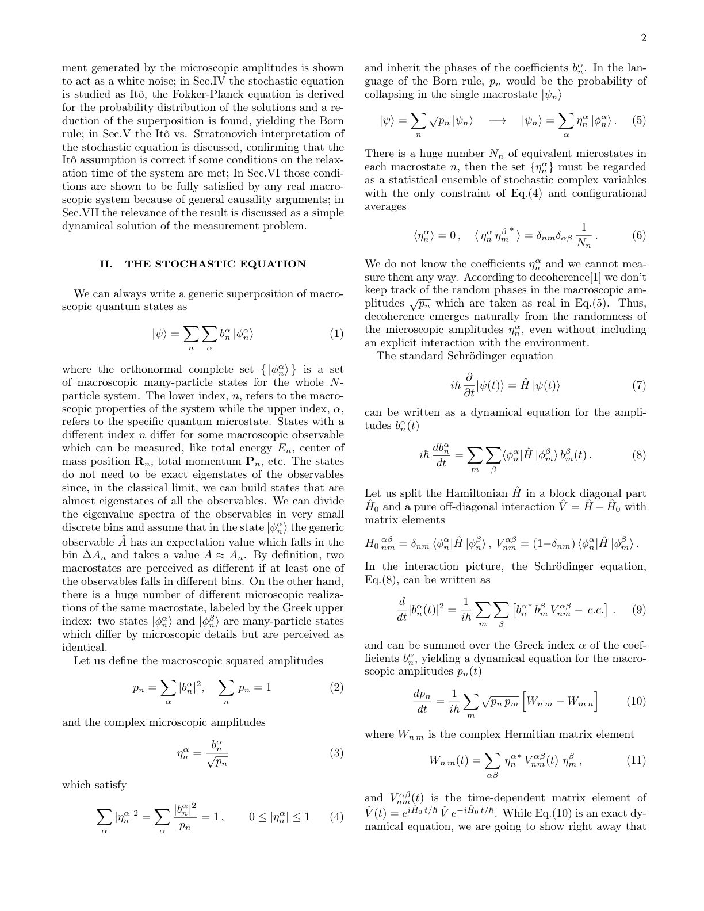
<figcaption class="paper-figure-caption"><b>Fig 1.</b> Low-resolution page preview, page 2</figcaption>
</figure>
<figure class="paper-figure-card">
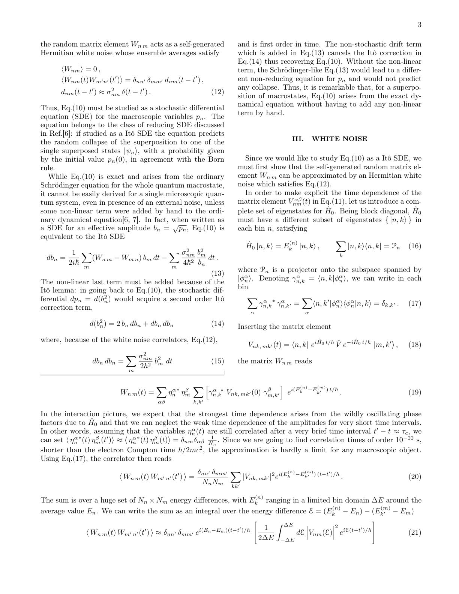
<figcaption class="paper-figure-caption"><b>Fig 2.</b> Low-resolution page preview, page 3</figcaption>
</figure>
<figure class="paper-figure-card">
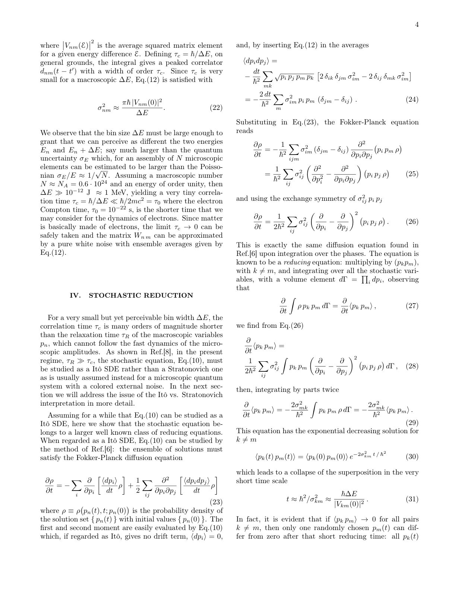
<figcaption class="paper-figure-caption"><b>Fig 3.</b> Low-resolution page preview, page 4</figcaption>
</figure>
<figure class="paper-figure-card">
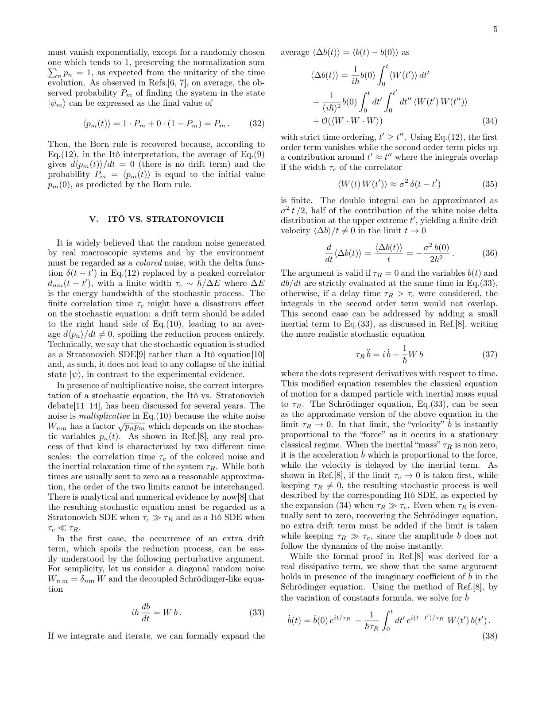
<figcaption class="paper-figure-caption"><b>Fig 4.</b> Low-resolution page preview, page 5</figcaption>
</figure>
<figure class="paper-figure-card">
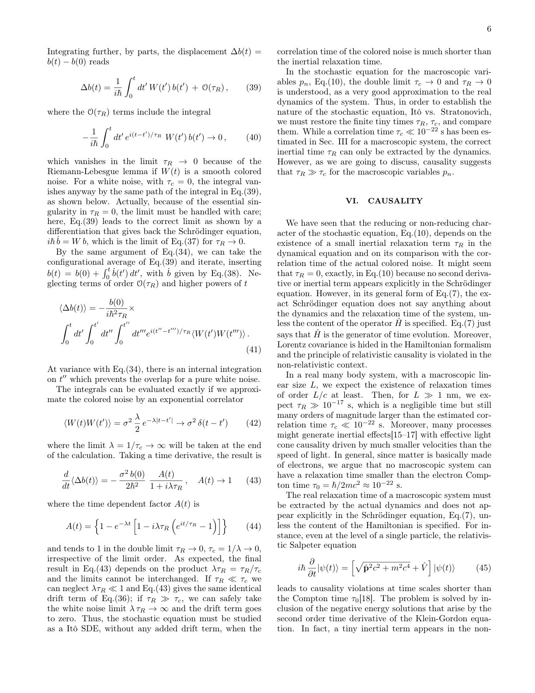
<figcaption class="paper-figure-caption"><b>Fig 5.</b> Low-resolution page preview, page 6</figcaption>
</figure>
</div>

<p><strong>Summary.</strong> This paper proposes a dynamical resolution to the quantum measurement problem by showing that the standard Schrödinger equation leads to a stochastic equation for macroscopic variables. By analyzing this equation using Itô calculus, the authors demonstrate that any macroscopic superposition will rapidly collapse into a definite state, thereby deriving the Born rule without explicit postulation.</p>
<p><strong>Why it may be interesting.</strong> This work offers a non-standard, dynamical approach to the measurement problem, providing a mechanism rooted in statistical physics (stochastic processes) that naturally enforces the Born rule for macroscopic systems.</p>
<details>
<summary>Detailed structure</summary>
<p><strong>Main problem.</strong> The paper addresses the measurement problem by providing a dynamical reason why macroscopic quantum superpositions, such as Schrödinger's cat, are not observed in reality.</p>
<p><strong>Main result.</strong> The standard Schrödinger equation, when analyzed through a stochastic framework, predicts that any macroscopic superposition will collapse almost instantaneously, and this collapse process naturally yields the Born rule.</p>
<p><strong>Method.</strong> The analysis involves decoupling macroscopic and microscopic degrees of freedom and deriving a stochastic differential equation (SDE) for the macroscopic amplitudes, which is then analyzed using Itô calculus.</p>
<p><strong>Model / system.</strong> The model uses the standard Schrödinger equation for a quantum system treated as a superposition of macrostates. The dynamics are mapped onto an effective stochastic equation whose noise term is self-generated by the microscopic ensemble average.</p>
<p><strong>Key observables.</strong> The decay of off-diagonal coherence terms ($\langle p_k(t) p_m(t) 
angle$) and the recovery of the Born rule ($\langle p_m(t) 
angle = p_m(0)$).</p>
<p><strong>Important parameters / regimes.</strong> The ratio of the inertial relaxation time ($    au_R$) to the noise correlation time ($ au_c$), and the macroscopic constraint $\Delta E \Delta X \gg \hbar c$.</p>
<p><strong>Assumptions / limitations.</strong> The core assumption is that the macroscopic state can be treated as a statistical ensemble of microstates, and the derivation relies on the white noise approximation for the random matrix elements.</p>
<p><strong>Paper structure.</strong> The paper progresses by deriving a stochastic equation from the Schrödinger dynamics, analyzing the required mathematical interpretation (Itô vs. Stratonovich) based on physical time scales, and finally demonstrating that the Itô interpretation leads to rapid collapse consistent with observation.</p>
</details>
<details>
<summary>Abstract</summary>
<p>A reason is discussed (may be not the only one) for why we do not see any superposition of macroscopic states in the real world. Under the general assumption that quantum macrostates are statistical ensembles of microstates, it is shown that any superposition of macrostates is reduced in a very short time by the unitary dynamics of the ordinary Schrödinger equation, deducing the Born rule without having to postulate it. In more detail, the macroscopic and microscopic degrees of freedom are decoupled in the Schrödinger equation, yielding an effective stochastic equation for the macroscopic variables, with the ensemble average of the microscopic amplitudes that acts as a self-generated internal white noise. The stochastic equation is shown to be a reducing Itô equation if some general causality conditions are met, predicting a very quick collapse of any macroscopic superposition upon formation, with probabilities which satisfy the Born rule. In the context of the von Neumann measurement scheme, the relevance of the result is discussed as a simple dynamical solution of the measurement problem.</p>
</details>
<p><sub><a href="#top">↑ back to top</a></sub></p>

<p><a id="paper-2605.15899"></a></p>
<h3 id="solving-classical-and-quantum-spin-glasses-with-deep-boltzmann-quantum-states"><a href="http://arxiv.org/abs/2605.15899v1">Solving Classical and Quantum Spin Glasses with Deep Boltzmann Quantum States</a></h3>
<p><strong>Authors:</strong> Luca Leone, Arka Dutta, Markus Heyl, Enrico Prati, Pietro Torta<br>
<strong>Type:</strong> theory · <strong>Category:</strong> disordered systems and neural networks · <strong>PDF:</strong> <a href="https://arxiv.org/pdf/2605.15899v1">https://arxiv.org/pdf/2605.15899v1</a><br>
<strong>Analysis basis:</strong> full PDF text, analyzed in chunks
<strong>Topic relevance:</strong> <code>exotic spin models in light-matter</code> <strong>3/5</strong> · <code>analog quantum simulation</code> <strong>2/5</strong> · <code>methods for driven-dissipative</code> <strong>2/5</strong></p>
<div class="figure-strip-hint">↔ Scroll figures horizontally</div>
<div class="paper-figures-scroll">
<figure class="paper-figure-card">
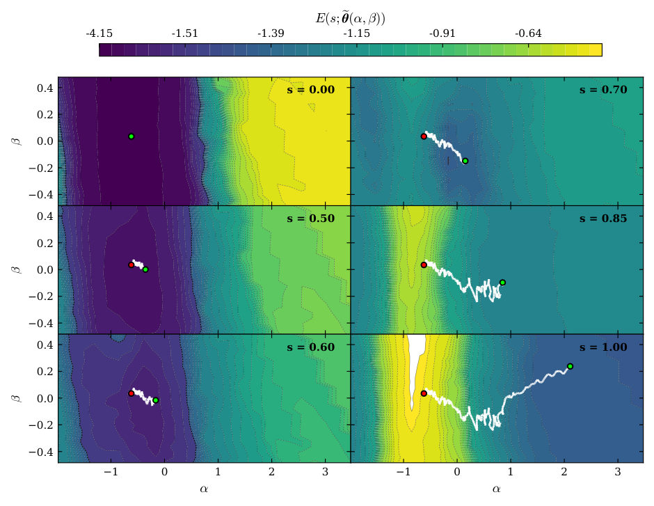
<figcaption class="paper-figure-caption"><b>Fig 1.</b> Figure 1. Visualization of the NQA trajectory for a 4-site Ising toy model with all-to-all random couplings. Each subplot shows the projected parameter trajectory (white line, with red and green dots marking the initial and current parameters) together with the instantaneous energy landscape at the corresponding sj, projected on a plane Σ (defined below). Throughout the variational optimization, the ansatz remains close to the minimum of the instantaneous energy, effectively guiding NQA to the global minimum of the target problem. Technical details of the plot, following Ref. [90], are as follows. At each schedule point sj, we record the instantaneous parameters and construct a real-valued...</figcaption>
</figure>
<figure class="paper-figure-card">
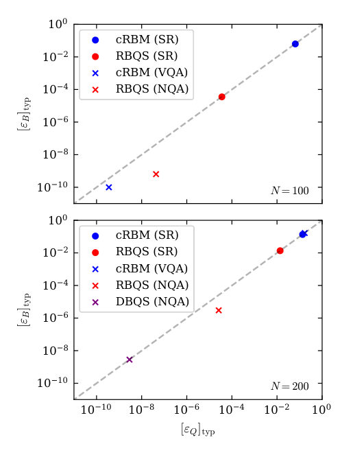
<figcaption class="paper-figure-caption"><b>Fig 2.</b> Figure 2. Comparison of the typical residual energies on the 10 realizations of the SK model with N = 100 (top panel) and N = 200 (bottom panel). Each point corresponds to a differ- ent combination of ansatz and optimization protocol. Only the DBQS results employ a catalyst and complex parameters.</figcaption>
</figure>
<figure class="paper-figure-card">
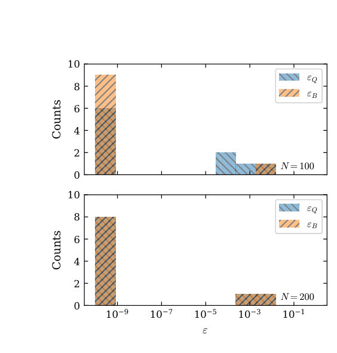
<figcaption class="paper-figure-caption"><b>Fig 3.</b> Figure 3. Residual energy histograms for the SK model with N = 100 (top panel) and N = 200 (bottom panel). Each entry corresponds to a distinct instance tackled by NQA and an RBQS/DBQS ansatz (see main text for details on the vari- ational model). Our setup solves all N = 100 spin instances and 7 out of 10 N = 200 spin instances.</figcaption>
</figure>
<figure class="paper-figure-card">
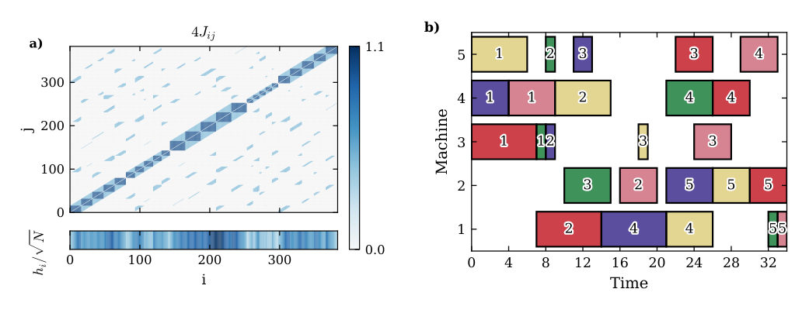
<figcaption class="paper-figure-caption"><b>Fig 4.</b> Figure 4. (a) Interaction matrix and longitudinal field vector of the Ising problem encoding a typical JSSP square instance. The represented instance has N = 5 and is displayed after variable pruning. (b) The Gantt diagram of the corresponding optimal schedule. Colors represent operations pertaining to a specific job, whereas the index of each operation indicate their ordering within that job.</figcaption>
</figure>
<figure class="paper-figure-card">
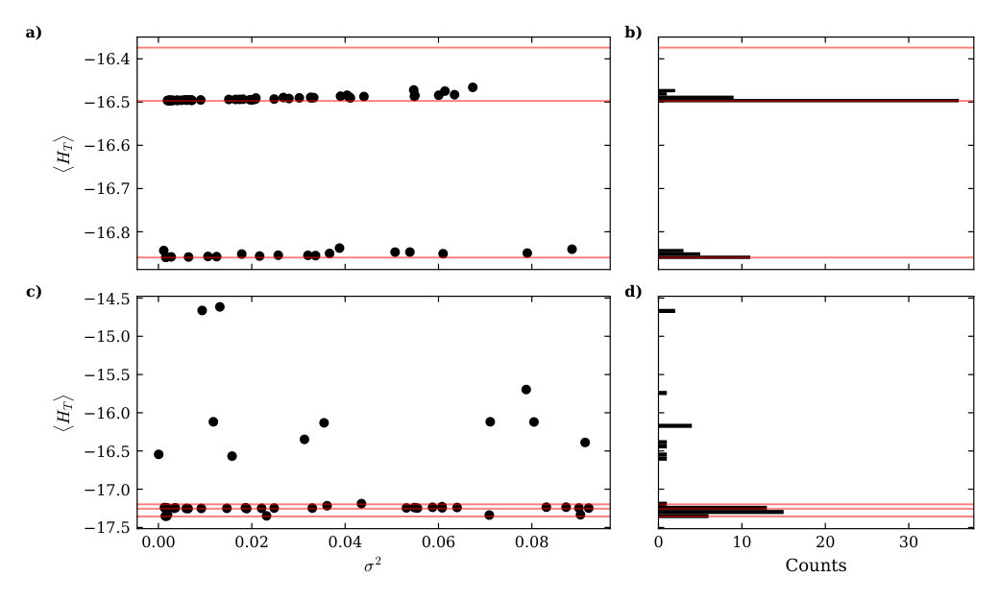
<figcaption class="paper-figure-caption"><b>Fig 5.</b> Figure 5. Convergence analysis for two representative N = 16 instances of the transverse-field SK model at g = 0.1. The results are obtained by optimizing a two-layer DBQS via catalyzed NQA. (a) and (c) Final variational energy ⟨HT ⟩versus final energy variance σ2. (b) and (d) Histogram of the final energies over the HPO trials. The red lines indicate the exact energies of the three lowest eigenstates, for comparison. Monte Carlo error bars are smaller than the symbol size and thus omitted.</figcaption>
</figure>
</div>

<p><strong>Summary.</strong> This work proposes Deep Boltzmann Quantum States (DBQS) as a powerful variational ansatz for simulating quantum many-body systems, particularly spin glasses. By integrating DBQS into a Neural Quantum Annealing (NQA) framework, the authors overcome the sampling and optimization hurdles associated with these disordered systems. The method achieves state-of-the-art results on complex models, including solving NP-hard scheduling problems.</p>
<p><strong>Why it may be interesting.</strong> The combination of deep learning architectures (DBMs) with quantum many-body physics provides a powerful, non-adiabatic route to solving hard optimization problems that challenge traditional quantum simulation methods.</p>
<details>
<summary>Detailed structure</summary>
<p><strong>Main problem.</strong> The paper addresses the difficulty of finding ground states for classical and quantum spin glasses due to their rugged energy landscapes with exponentially many local minima.</p>
<p><strong>Main result.</strong> The authors successfully solved instances of classical and quantum Ising spin-glass models and even the NP-hard Job Shop Scheduling Problem, exceeding current quantum annealing hardware limitations.</p>
<p><strong>Method.</strong> They introduce Deep Boltzmann Quantum States (DBQS) as a variational ansatz, trained using Neural Quantum Annealing (NQA) combined with natural-gradient updates and efficient block-Gibbs sampling.</p>
<p><strong>Model / system.</strong> The focus is on spin glass models, such as the Ising spin-glass Hamiltonian, which are characterized by disorder and energy frustration. The state is parameterized by the DBQS, which extends Boltzmann Machines to the quantum domain.</p>
<p><strong>Key observables.</strong> Variational energy $E(	heta)$, local energy $E_{	ext{loc}}(x; 	heta)$, and the ability to calculate these efficiently via matrix multiplications.</p>
<p><strong>Important parameters / regimes.</strong> The annealing schedule parameter $s$ (interpolating from easy to hard Hamiltonian regimes), and optimization hyperparameters (e.g., learning rates, momentum $\mu$).</p>
<p><strong>Assumptions / limitations.</strong> The primary assumption is that the DBQS ansatz, combined with NQA, provides a sufficiently expressive and computationally tractable representation of the true ground state wavefunction.</p>
<p><strong>Figures summary.</strong> Figures illustrate the NQA trajectory for toy models, showing the projected parameter evolution and energy landscape minimization. Tables provide quantitative comparisons of energy errors ($\epsilon_B, \epsilon_Q$) against exact diagonalization results for various spin glass benchmarks.</p>
<p><strong>Paper structure.</strong> The paper builds from general NQS methods (TDVP/VQA) to the specialized DBQS ansatz, emphasizing its computational advantages (block-Gibbs sampling, efficient local operator calculation). It then details the NQA training scheme, followed by extensive benchmarking across various spin glass and combinatorial optimization problems.</p>
</details>
<details>
<summary>Abstract</summary>
<p>Variational neural network models have achieved remarkable success in solving ground-state problems of quantum many-body systems. However, addressing classical and quantum spin glasses remains challenging, as disorder and energy frustration give rise to an exponentially large number of local energy minima separated by high-energy barriers, hindering the efficiency of conventional Metropolis-based Monte Carlo methods. To bridge this gap, we introduce Deep Boltzmann Quantum States, a class of neural quantum states inspired by deep Boltzmann machines that inherit efficient block Gibbs sampling. We also propose two key advances in the training algorithm. Firstly, we combine natural-gradient updates with state-of-the-art stochastic optimizers. Secondly, we gradually tune the hardness of the problem Hamiltonian by interpolating from an easy to a hard regime, without the need to closely approximate the instantaneous adiabatic state at intermediate times. We match the exact solution or the best available estimate for several instances of classical and quantum Ising spin-glass models with infinite-range interactions and hundreds of spins. We also solve instances of the NP-hard Job Shop Scheduling Problem exceeding the current limitations of quantum annealing hardware. To summarize, deep neural architectures with efficient global update rules and trained within an annealing-like scheme, provide a powerful framework for solving real-world hard combinatorial optimization and for investigating disordered quantum many-body systems.</p>
</details>
<p><sub><a href="#top">↑ back to top</a></sub></p>

<p><a id="paper-2605.16020"></a></p>
<h3 id="variational-autoregressive-networks-with-probability-priors"><a href="http://arxiv.org/abs/2605.16020v1">Variational Autoregressive Networks with probability priors</a></h3>
<p><strong>Authors:</strong> Piotr Białas, Piotr Korcyl, Tomasz Stebel, Dawid Zapolski<br>
<strong>Type:</strong> theory · <strong>Category:</strong> disordered systems and neural networks · <strong>PDF:</strong> <a href="https://arxiv.org/pdf/2605.16020v1">https://arxiv.org/pdf/2605.16020v1</a><br>
<strong>Analysis basis:</strong> full PDF text, analyzed in chunks
<strong>Topic relevance:</strong> <code>exotic spin models in light-matter</code> <strong>3/5</strong> · <code>methods for driven-dissipative</code> <strong>3/5</strong> · <code>analog quantum simulation</code> <strong>1/5</strong></p>
<div class="figure-strip-hint">↔ Scroll figures horizontally</div>
<div class="paper-figures-scroll">
<figure class="paper-figure-card">
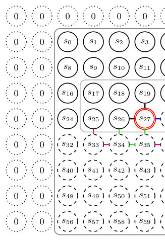
<figcaption class="paper-figure-caption"><b>Fig 1.</b> Figure 1: Calculating the p(s27|s&lt;27). Solid black lines indicate the spins that are already fixed. The dashed lines denote the spins that are not yet fixed and should be summed over to obtain the true conditional probability p27(s&lt;27). The dotted lines indicate padding spins that are required for efficient t4 order calculations. The inner contour represents the convo- lution kernel for t4 order approximation. Other approximations require smaller kernels and respectively smaller padding. This approach does not take into account the periodic boundary conditions in the vertical direction.</figcaption>
</figure>
<figure class="paper-figure-card">
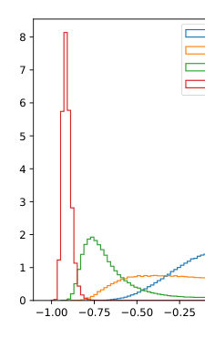
<figcaption class="paper-figure-caption"><b>Fig 2.</b> Figure 2: Magnetization distribution for the values of β considered in this reference. Obtained from Monte-Carlo simulations.</figcaption>
</figure>
<figure class="paper-figure-card">
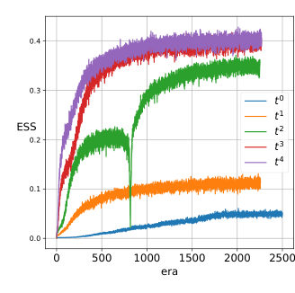
<figcaption class="paper-figure-caption"><b>Fig 3.</b> Figure 3: History of the training for Ising model on 32 lattice at critical β. ESS (left) and m (right). The horizontal axis marks the eras where an era is a 100 weights update using the batch of 4096 samples. For clarity we present a moving average over 100 weights updates.</figcaption>
</figure>
<figure class="paper-figure-card">
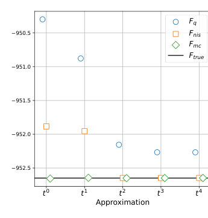
<figcaption class="paper-figure-caption"><b>Fig 4.</b> Figure 4: Various estimates of F for the Ising model at critical β (left) and β = 0.5 (right). Uncertainties are much smaller than the points size.</figcaption>
</figure>
<figure class="paper-figure-card">
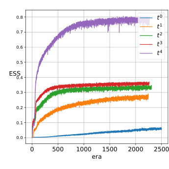
<figcaption class="paper-figure-caption"><b>Fig 5.</b> Figure 5: History of the training for the Ising model at β = 0.5.</figcaption>
</figure>
</div>

<p><strong>Summary.</strong> This paper tackles the inefficiency of Monte Carlo simulations near phase transitions by employing Variational Autoregressive Networks (VANs). The key contribution is demonstrating that embedding physical knowledge, such as symmetries and local interactions, as priors into the neural network architecture drastically improves training stability and accuracy for simulating spin models like the Ising and Edwards-Anderson systems.</p>
<p><strong>Why it may be interesting.</strong> The work directly addresses the intersection of advanced machine learning (autoregressive models) and complex many-body physics (spin glasses), providing a blueprint for physics-informed AI in condensed matter.</p>
<details>
<summary>Detailed structure</summary>
<p><strong>Main problem.</strong> Monte Carlo simulations suffer from critical slowing down near phase transitions, and deep learning samplers struggle with training because they ignore underlying physical symmetries.</p>
<p><strong>Main result.</strong> Incorporating physical priors into Variational Autoregressive Networks significantly reduces the training burden and improves simulation efficiency for discrete spin models.</p>
<p><strong>Method.</strong> The authors propose a framework using VANs, approximating the true probability distribution by incorporating physical constraints (priors) derived from the system's symmetries and interactions.</p>
<p><strong>Model / system.</strong> The study focuses on discrete spin systems, specifically the Ising model and the Edwards-Anderson spin glass model, defined by Hamiltonians involving nearest-neighbor interactions.</p>
<p><strong>Key observables.</strong> Autocorrelation time, Free Energy (F), Magnetization (M), and Effective Sample Size (ESS).</p>
<p><strong>Important parameters / regimes.</strong> Temperature parameter beta ($eta$), critical temperature ($eta_c$), and system size (e.g., $32 	imes 32$ lattice).</p>
<p><strong>Assumptions / limitations.</strong> The core assumption is that restricting the network's dependency structure using physical priors (instead of a 'blank slate' approach) is beneficial for training stability and accuracy.</p>
<p><strong>Figures summary.</strong> Figures illustrate training histories (ESS, magnetization) comparing different approximation levels ($t_1, t_2, t_3$) for both the Ising and Edwards-Anderson models, showing convergence towards true values.</p>
<p><strong>Paper structure.</strong> The paper systematically develops the VAN framework, applies it to the Ising model, and then extends the methodology to the more complex Edwards-Anderson spin glass model, comparing results across various temperature regimes and approximation orders.</p>
</details>
<details>
<summary>Abstract</summary>
<p>Monte Carlo methods are essential across diverse scientific fields, yet their efficiency is frequently hampered by critical slowing down-a sharp increase in autocorrelation times near phase transitions. Although deep learning approaches, such as neural-network-based samplers, have been proposed to alleviate this issue, they face another serious problem: the difficulty of training the models. This difficulty partially stems from the overly general nature of original machine-learning architectures, which often ignore underlying physical symmetries and force networks to relearn them from scratch. In this paper, we demonstrate that incorporating physical priors into the model significantly enhances performance. Building upon existing strategies that integrate spin-spin interactions, we propose a framework that utilizes a prior probability distribution as a starting point for training. Our results for the Ising model, as well as for the Edwards-Anderson spin glass model, suggest that moving away from `blank slate' models in favor of physics-informed priors reduces the training burden and facilitates the simulation of larger system sizes in discrete spin models.</p>
</details>
<p><sub><a href="#top">↑ back to top</a></sub></p>

<p><a id="paper-2605.15601"></a></p>
<h3 id="bayesian-sequential-verification-for-budget-aware-quantum-program-testing"><a href="http://arxiv.org/abs/2605.15601v1">Bayesian Sequential Verification for Budget-Aware Quantum Program Testing</a></h3>
<p><strong>Authors:</strong> Lei Zhang<br>
<strong>Type:</strong> theory · <strong>Category:</strong> quantum information and computing · <strong>PDF:</strong> <a href="https://arxiv.org/pdf/2605.15601v1">https://arxiv.org/pdf/2605.15601v1</a><br>
<strong>Analysis basis:</strong> full PDF text, analyzed in chunks
<strong>Topic relevance:</strong> <code>quantum measurements</code> <strong>3/5</strong> · <code>analog quantum simulation</code> <strong>1/5</strong> · <code>entanglement &amp; information structure</code> <strong>1/5</strong> · <code>measurement-induced transitions</code> <strong>1/5</strong></p>
<div class="figure-strip-hint">↔ Scroll figures horizontally</div>
<div class="paper-figures-scroll">
<figure class="paper-figure-card">
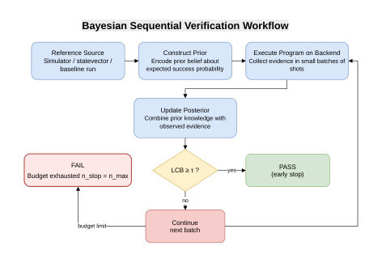
<figcaption class="paper-figure-caption"><b>Fig 1.</b> Fig. 1. Overall illustration of the Bayesian sequential verification workflow.</figcaption>
</figure>
</div>

<p><strong>Summary.</strong> This paper introduces Bayesian sequential verification, a statistically robust method for testing quantum programs under finite measurement budgets. It uses Bayesian Hypothesis Testing to sequentially update confidence in a program's success probability, allowing for early termination when sufficient evidence is gathered. This provides a practical, resource-aware workflow for building reliable quantum continuous-integration pipelines.</p>
<p><strong>Why it may be interesting.</strong> While focused on quantum computation, the rigorous statistical framework for resource-constrained decision-making (budget-aware testing) is highly relevant for characterizing the reliability of complex quantum simulations or measurements in AMO physics.</p>
<details>
<summary>Detailed structure</summary>
<p><strong>Main problem.</strong> The paper addresses the challenge of verifying quantum programs, which yield statistical distributions, by developing a method that is both statistically rigorous and mindful of limited computational resources (shot budgets).</p>
<p><strong>Main result.</strong> Bayesian sequential verification significantly reduces the required measurement cost compared to fixed-budget testing when the quantum program's success probability exceeds the target threshold.</p>
<p><strong>Method.</strong> It formulates the verification as a reference-based Bayesian Hypothesis Testing workflow, iteratively updating posterior distributions batch-by-batch as measurement evidence accumulates.</p>
<p><strong>Model / system.</strong> The work applies to general quantum programs tested on quantum backends, using case studies like Bell-state preparation and QAOA for MaxCut optimization.</p>
<p><strong>Key observables.</strong> Property success probability ($    heta$), conservative lower credible bound (LCB), and the resulting pass/fail decision.</p>
<p><strong>Important parameters / regimes.</strong> Prior strength ($s$), target threshold ($   au$), batch size ($b$), and the required pass-streak ($r$).</p>
<p><strong>Assumptions / limitations.</strong> The outcomes are assumed to be conditionally independent and identically distributed (i.i.d.) given the true probability, and the prior must be accurately estimated from reference runs.</p>
<p><strong>Figures summary.</strong> Figure 1 illustrates the overall workflow from reference source to decision. Algorithm 1 details the sequential Bayesian verification procedure, including LCB calculation and stopping rules.</p>
<p><strong>Paper structure.</strong> The paper introduces the problem, details the Bayesian sequential verification methodology (priors, sequential updates, LCB decision rule), evaluates it on Bell-state and QAOA workloads, and compares its efficiency against fixed-budget baselines.</p>
</details>
<details>
<summary>Abstract</summary>
<p>Quantum programs often produce probability distributions rather than deterministic outputs, making verification inherently statistical and increasingly costly on real hardware. In practice, developers still frequently rely on testing with fixed shot budgets on simulators, which are simple but time-consuming and poorly suited to noisy backends. What is missing is a verification approach that is both statistically explicit and budget-aware.   This paper formulates Bayesian sequential verification as a reference-based Bayesian hypothesis testing workflow in which priors are derived from explicit reference sources, such as finite-shot reference runs or ideal/statevector-based computation, and verification decisions are updated batch by batch as measurement evidence accumulates.   This approach is evaluated in Qiskit on two complementary workloads: Bell-state and QAOA-MaxCut. Across both case studies, the results show that Bayesian sequential verification can substantially reduce measurement costs compared to fixed-budget baselines when the success probability of the program exceeds the target threshold.   The findings position Bayesian sequential verification as a practical verification workflow for quantum programs. The approach provides a foundation for future quantum continuous-integration pipelines that require reliable, budget-aware pass/fail decisions and motivates validation on real quantum hardware.</p>
</details>
<p><sub><a href="#top">↑ back to top</a></sub></p>

<p><a id="paper-2605.16074"></a></p>
<h3 id="when-noisy-quantum-order-finding-remains-recoverable-for-shors-algorithm"><a href="http://arxiv.org/abs/2605.16074v1">When Noisy Quantum Order Finding Remains Recoverable for Shor's Algorithm</a></h3>
<p><strong>Authors:</strong> Qingxin Yang, Stefano Markidis<br>
<strong>Type:</strong> both · <strong>Category:</strong> quantum information and computing · <strong>PDF:</strong> <a href="https://arxiv.org/pdf/2605.16074v1">https://arxiv.org/pdf/2605.16074v1</a><br>
<strong>Analysis basis:</strong> full PDF text, analyzed in chunks
<strong>Topic relevance:</strong> <code>QC/QI experiment</code> <strong>3/5</strong> · <code>quantum measurements</code> <strong>3/5</strong></p>
<div class="figure-strip-hint">↔ Scroll figures horizontally</div>
<div class="paper-figures-scroll">
<figure class="paper-figure-card">
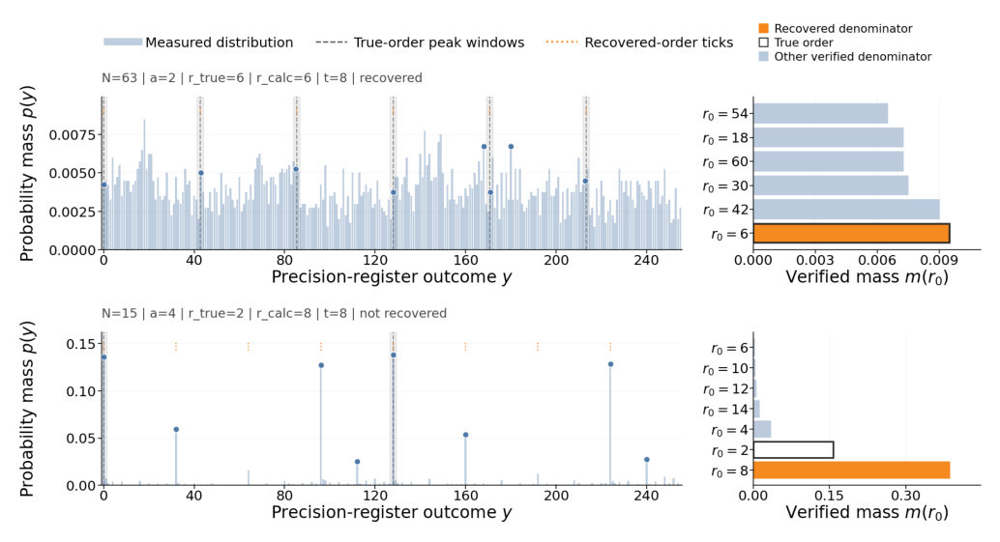
<figcaption class="paper-figure-caption"><b>Fig 1.</b> Figure 1: Top: Recoverability despite weak global histogram structure. Although the measured distribution is diffuse and the global structure metrics are weak, the verified candidate comparison still selects the true period, 𝑟= 6, yielding recoverability. Bottom: No recoverability despite visible peak structure. The verified candidate comparison favors an incorrect period, 𝑟= 8, over the true period, 𝑟= 2, and recoverability fails.</figcaption>
</figure>
<figure class="paper-figure-card">
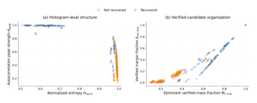
<figcaption class="paper-figure-caption"><b>Fig 2.</b> Figure 2: Residual structure and recoverability. Each point represents one instance, colored by recoverability outcome. (a) Normalized entropy 𝐻norm versus autocorrelation peak strength 𝐴peak, characterizing flatness and residual structure. (b) Dominant verified mass fraction 𝑀1,frac versus verified margin fraction Δver,frac, characterizing the organization of residual structure.</figcaption>
</figure>
<figure class="paper-figure-card">
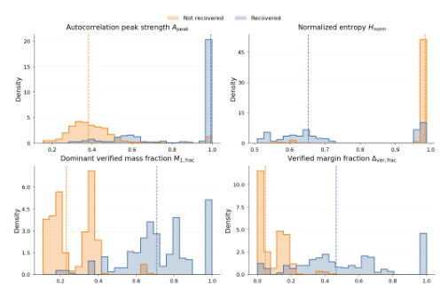
<figcaption class="paper-figure-caption"><b>Fig 3.</b> Figure 3: Distribution of four features by recoverability. The histograms compare runs that were not recoverable (orange) with runs that were recoverable (blue) for autocorrelation peak strength 𝐴peak, normalized entropy 𝐻norm, dominant verified mass fraction 𝑀1,frac and verified margin fraction Δver,frac. Bars show empirical density, and dashed vertical lines mark the median of each group.</figcaption>
</figure>
<figure class="paper-figure-card">
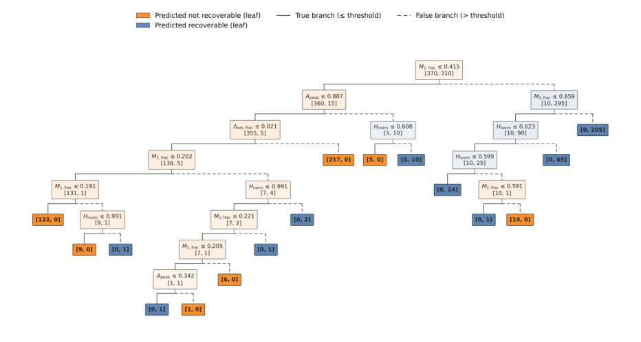
<figcaption class="paper-figure-caption"><b>Fig 4.</b> Figure 4: Decision tree classifier for predicting recoverability. Internal nodes show split rules based on 𝐴peak, 𝐻norm, 𝑀1,frac, and Δver,frac. Terminal leaves show the final prediction, with orange indicating predicted not recoverable and blue indicating predicted recoverable. Counts are shown as [not recoverable, recoverable]. Solid black branches indicate the true condition, ≤ threshold, while dashed black branches indicate the false condition, &gt; threshold.</figcaption>
</figure>
<figure class="paper-figure-card">
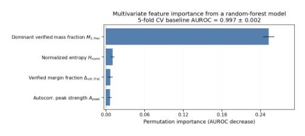
<figcaption class="paper-figure-caption"><b>Fig 5.</b> Figure 5: Permutation importance from a random-forest clas- sifier trained on the four selected recoverability features. Importance is measured as the decrease in held-out AUROC after randomly permuting each feature. Error bars show the standard deviation across cross-validation folds.</figcaption>
</figure>
</div>

<p><strong>Summary.</strong> This work analyzes the robustness of order finding, a key step in Shor's algorithm, when subjected to noise on current quantum hardware. By analyzing measured probability distributions, the authors find that successful recovery depends most strongly on how concentrated the verified probability mass is on the correct candidate denominator. This highlights that post-processing-aware metrics are more predictive of algorithmic success than global measures of distribution structure.</p>
<p><strong>Why it may be interesting.</strong> The focus on the interplay between quantum measurement noise and classical signal processing techniques (like continued fractions) provides concrete, actionable metrics for diagnosing the performance limits of quantum algorithms on NISQ hardware.</p>
<details>
<summary>Detailed structure</summary>
<p><strong>Main problem.</strong> The paper investigates the conditions under which the true multiplicative order, a core subroutine of Shor's algorithm, can be recovered from a measured, noisy quantum phase estimation distribution.</p>
<p><strong>Main result.</strong> Recoverability is primarily governed not by the global structure of the noise-affected distribution, but by the concentration of verified probability mass on the correct candidate denominator after classical post-processing.</p>
<p><strong>Method.</strong> The authors analyzed 680 measured distributions using classical post-processing (continued-fraction) and characterized them using four features: autocorrelation peak strength, normalized entropy, dominant verified mass fraction, and verified margin fraction.</p>
<p><strong>Model / system.</strong> The study uses measured precision-register output distributions collected from IBM quantum systems simulating noisy order finding circuits. The underlying process involves the ideal comb-like structure being distorted by quantum noise.</p>
<p><strong>Key observables.</strong> Autocorrelation peak strength, Normalized entropy, Dominant verified mass fraction, and Verified margin fraction.</p>
<p><strong>Important parameters / regimes.</strong> The true multiplicative order ($r$), the measured distribution $p(y)$, and the parameters defining the noise model (e.g., $\epsilon$ in the convolution model).</p>
<p><strong>Assumptions / limitations.</strong> The analysis assumes the standard classical post-processing routine (continued-fraction) is applied, and it separates global distribution structure from post-processing-aware mass competition.</p>
<p><strong>Figures summary.</strong> Figures illustrate examples of recoverable/non-recoverable cases, and feature comparisons (e.g., $M_{1,frac}$ vs. $\Delta_{ver,frac}$) show trends where higher values correlate with recoverability. Random forest permutation importance confirms $M_{1,frac}$ as the most predictive feature.</p>
<p><strong>Paper structure.</strong> The paper progresses from defining the problem (noisy order finding) to developing diagnostic features based on post-processing outcomes. It then employs statistical classifiers (AUROC, Random Forest, Decision Tree) to determine which features best predict recoverability, culminating in the identification of the dominant verified mass fraction as the key indicator.</p>
</details>
<details>
<summary>Abstract</summary>
<p>Order finding is the core subroutine of Shor's algorithm. On NISQ hardware, phase estimation output distributions are often distorted by noise, making correct order recovery difficult. We study recoverability in noisy order finding: given a measured precision-register distribution, when does standard classical post-processing still return the true order? We analyze 680 distributions from IBM quantum systems across problem instances and circuit settings. For each distribution, we apply continued-fraction post-processing with modular verification and define recoverability as whether the recovered order equals the true one. We characterize each distribution using four features: autocorrelation peak strength, normalized entropy, dominant verified mass fraction, and verified margin fraction. We evaluate these quantities using marginal feature comparisons, single-feature AUROC analysis, and multivariate tree-based classifiers. We use random-forest permutation importance to assess which quantities contribute distinct predictive information once the other features are known. To make classification behavior interpretable, we train a decision tree that exposes threshold rules for recoverable and non-recoverable distributions. We find that recoverability is strongly associated with residual comb-like structure in the measured distribution and the way verified probability mass is organized across candidate denominators. The dominant verified mass fraction is the strongest single-feature indicator of recoverability, and tree-based analysis shows it also provides the primary split in an interpretable threshold description. Some highly distorted distributions remain recoverable when one verified denominator dominates the post-processing mass, while some visibly structured distributions fail because classical post-processing favors an incorrect verified denominator.</p>
</details>
<p><sub><a href="#top">↑ back to top</a></sub></p>

<p><a id="paper-2605.15272"></a></p>
<h3 id="a-general-proof-of-integer-renyi-qnec"><a href="http://arxiv.org/abs/2605.15272v1">A general proof of integer Rényi QNEC</a></h3>
<p><strong>Authors:</strong> Tanay Kibe, Pratik Roy<br>
<strong>Type:</strong> theory · <strong>Category:</strong> other · <strong>PDF:</strong> <a href="https://arxiv.org/pdf/2605.15272v1">https://arxiv.org/pdf/2605.15272v1</a><br>
<strong>Analysis basis:</strong> full PDF text, analyzed in chunks
<strong>Topic relevance:</strong> <code>entanglement &amp; information structure</code> <strong>3/5</strong> · <code>Keldysh / 2PI / non-Gaussian methods</code> <strong>2/5</strong></p>
<div class="figure-strip-hint">↔ Scroll figures horizontally</div>
<div class="paper-figures-scroll">
<figure class="paper-figure-card">
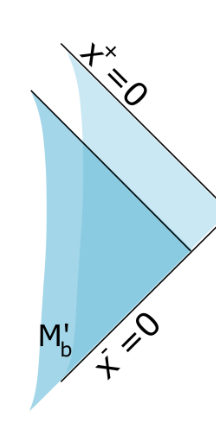
<figcaption class="paper-figure-caption"><b>Fig 1.</b> Figure 1. Schematic of the null cut algebras. The transverse directions are perpendicular to the plane of the figure. The null planes x± = 0 are labelled. Light blue regions correspond to the Rindler wedge R : {x+ &gt; 0, x−&lt; 0} and its commutant R′. Dark blue regions correspond to the null cut algebra Mb and its commutant M ′ b.</figcaption>
</figure>
</div>

<p><strong>Summary.</strong> This theoretical paper proves the Rényi Quantum Null Energy Condition for integer parameters $n \ge 2$ within the framework of local Poincaré-invariant Quantum Field Theory. It achieves this by demonstrating the log-convexity of the Rényi relative entropy using sophisticated tools from operator algebras and non-commutative functional analysis. The result provides a powerful mathematical constraint on the structure of quantum states in QFT.</p>
<p><strong>Why it may be interesting.</strong> The rigorous mathematical framework connecting quantum energy conditions (a fundamental constraint in QFT) to the convexity properties of generalized entropy measures (Rényi divergences) is highly relevant for understanding quantum field theory constraints in curved or null-geometry backgrounds.</p>
<details>
<summary>Detailed structure</summary>
<p><strong>Main problem.</strong> The paper aims to prove the Rényi Quantum Null Energy Condition (Rényi QNEC), which is a generalization of the standard Quantum Null Energy Condition (QNEC). This conjecture relates to the non-negativity of the second null shape variation of the Sandwiched Rényi Divergence (SRD).</p>
<p><strong>Main result.</strong> The authors prove the Rényi QNEC for all integer Rényi parameters $n \ge 2$ for von Neumann algebras possessing a half-sided modular inclusion structure. This is achieved by proving the log-convexity of the associated Kosaki $L_n$ norm.</p>
<p><strong>Method.</strong> The proof employs advanced techniques from operator algebras, specifically utilizing von Neumann algebras, Haagerup's non-commutative $L_p$ spaces, and analyzing the dynamics generated by null translations via semigroups.</p>
<p><strong>Model / system.</strong> The context is local Poincaré-invariant Quantum Field Theory (QFT) on Minkowski spacetime, analyzed using null coordinates and associated with von Neumann algebras defined over null-cut regions.</p>
<p><strong>Key observables.</strong> Sandwiched Rényi Divergence (SRD), $D_n(\Psi\|\Omega; M_A)$, and the Kosaki $L_n$ norm of normal positive functionals.</p>
<p><strong>Important parameters / regimes.</strong> Integer Rényi parameter $n \ge 2$, and the continuous parameter $c$ governing the null translation flow.</p>
<p><strong>Assumptions / limitations.</strong> The existence of a half-sided modular inclusion (HSMI) structure on the von Neumann algebras, and the finiteness of the SRD of the excited state relative to the vacuum.</p>
<p><strong>Figures summary.</strong> Figure 1 schematically illustrates null cut algebras, such as the Rindler wedge and the null cut algebra $M_b$.</p>
<p><strong>Paper structure.</strong> The paper builds from defining the SRD and the RQNEC conjecture, establishing the necessary mathematical framework using non-commutative $L_p$ spaces and null translations, and culminating in the proof of log-convexity via a cyclic Ward identity.</p>
</details>
<details>
<summary>Abstract</summary>
<p>The Rényi quantum null energy condition conjectures that the second null shape variation of the sandwiched Rényi divergence (SRD) of an excited state relative to the vacuum is non-negative in local Poincaré-invariant quantum field theory, giving a one-parameter generalization of the quantum null energy condition (QNEC). We prove Rényi QNEC for all integer Rényi parameters $n\geq 2$ for von Neumann algebras carrying a half-sided modular inclusion structure. The only assumption on the excited state is finiteness of its SRD relative to the vacuum. Concretely, for any $σ$-finite von Neumann algebra with such an inclusion, we prove log-convexity, under the associated null-translation semigroup, of the Kosaki $L^n$ norm of any normal positive functional with finite $L^n$ norm.</p>
</details>
<p><sub><a href="#top">↑ back to top</a></sub></p>

<p><a id="paper-2605.15784"></a></p>
<h3 id="quantum-compressed-sensing"><a href="http://arxiv.org/abs/2605.15784v1">Quantum compressed sensing</a></h3>
<p><strong>Authors:</strong> Jianyong Hu, Wei Li, Shuxiao Wu, Liwen Zhang, Yongchuang Sun, Jiazhao Tian, Guosheng Feng, Zhixing Qiao, Jianqiang Liu, Changgang Yang, Ruiyun Chen, Chengbing Qin, Guofeng Zhang, Liantuan Xiao, Suotang Jia<br>
<strong>Type:</strong> both · <strong>Category:</strong> quantum information and computing · <strong>PDF:</strong> <a href="https://arxiv.org/pdf/2605.15784v1">https://arxiv.org/pdf/2605.15784v1</a><br>
<strong>Analysis basis:</strong> full PDF text, analyzed in chunks
<strong>Topic relevance:</strong> <code>quantum measurements</code> <strong>3/5</strong> · <code>entanglement &amp; information structure</code> <strong>1/5</strong> · <code>measurement-induced transitions</code> <strong>1/5</strong></p>
<div class="figure-strip-hint">↔ Scroll figures horizontally</div>
<div class="paper-figures-scroll">
<figure class="paper-figure-card">
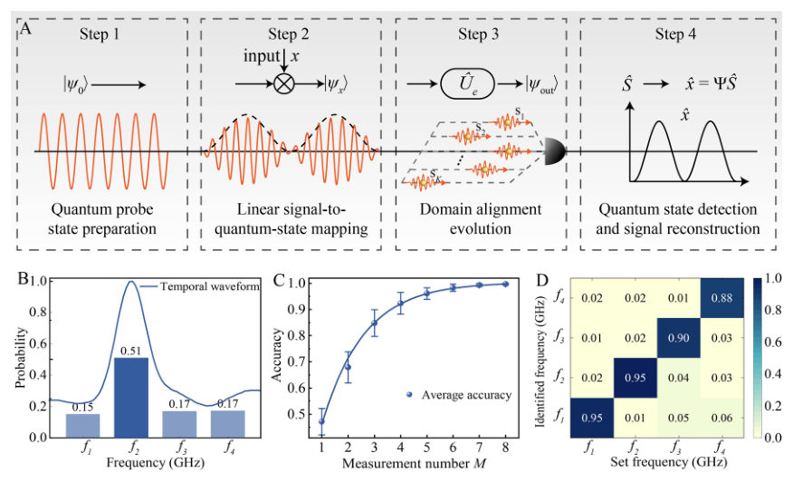
<figcaption class="paper-figure-caption"><b>Fig 1.</b> Figure 1. QCS paradigm and frequency-domain validation. (A) The QCS workflow comprises four steps. Step 1, quantum</figcaption>
</figure>
<figure class="paper-figure-card">
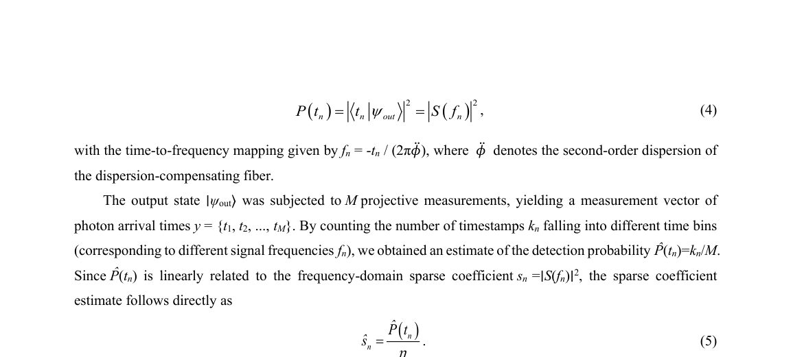
<figcaption class="paper-figure-caption"><b>Fig 2.</b> Figure 1(B) shows the probability distribution over a four-dimensional sparse vector for a single-tone signal</figcaption>
</figure>
<figure class="paper-figure-card">
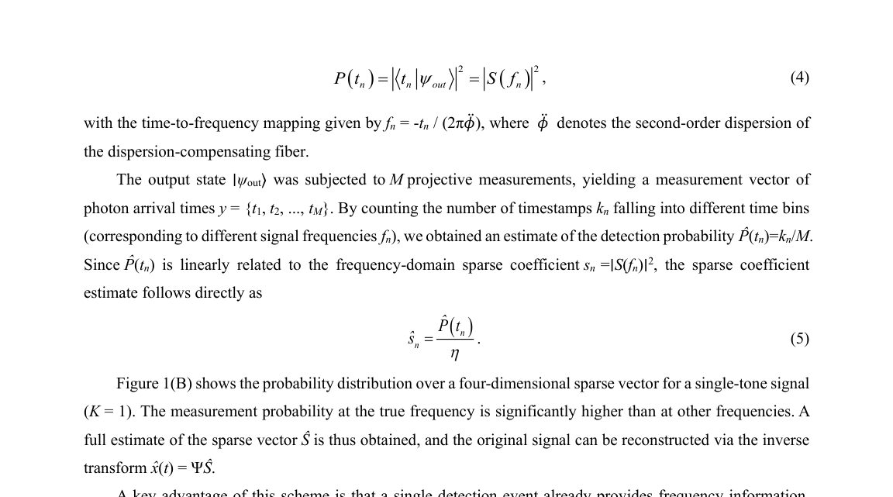
<figcaption class="paper-figure-caption"><b>Fig 3.</b> Figure 1(C) shows that the frequency identification accuracy reaches 47% with a single photon detection event</figcaption>
</figure>
<figure class="paper-figure-card">
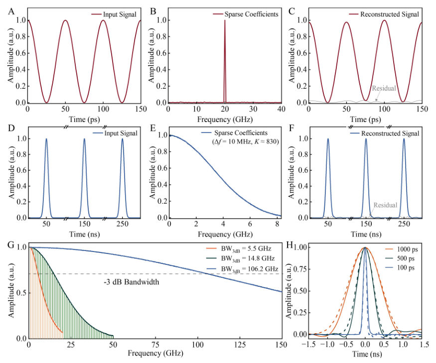
<figcaption class="paper-figure-caption"><b>Fig 4.</b> Figure 2. Frequency-domain sparse signal reconstruction based on DFT scheme. (A-C) Reconstruction of a single-tone signal</figcaption>
</figure>
<figure class="paper-figure-card">
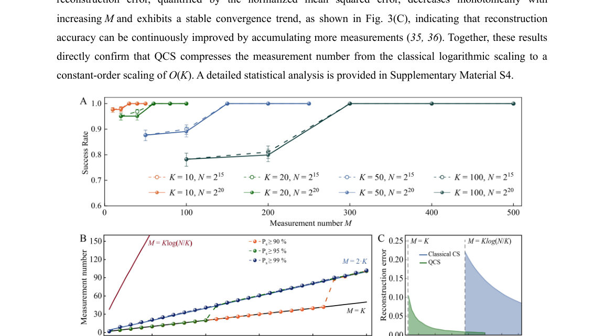
<figcaption class="paper-figure-caption"><b>Fig 5.</b> Figure 3. QCS results for time-domain sparse signals. (A) Reconstruction success rate versus measurement number M for</figcaption>
</figure>
</div>

<p><strong>Summary.</strong> This work introduces Quantum Compressed Sensing (QCS), a paradigm that uses unitary quantum evolution to reconstruct sparse signals. By encoding positional information into the quantum state evolution rather than requiring explicit measurements, QCS bypasses the classical measurement lower bound. This results in a measurement requirement scaling linearly with sparsity ($M \sim K$), offering a major leap in information acquisition efficiency for sensing and imaging.</p>
<p><strong>Why it may be interesting.</strong> It provides a concrete physical pathway—using unitary transformations—to overcome fundamental information-theoretic limits in measurement-based signal processing, which has implications for quantum sensing and metrology.</p>
<details>
<summary>Detailed structure</summary>
<p><strong>Main problem.</strong> The paper addresses the fundamental limitation of classical Compressed Sensing (CS) by proposing Quantum Compressed Sensing (QCS) to achieve superior signal acquisition efficiency.</p>
<p><strong>Main result.</strong> QCS reduces the required measurement number from the classical bound of $M = O(K\log(N/K))$ to $M \sim O(K)$, achieving ultimate information acquisition efficiency.</p>
<p><strong>Method.</strong> The methodology reframes signal acquisition as a unitary quantum evolution, using domain-alignment evolution to physically execute the support-set search at the quantum level.</p>
<p><strong>Model / system.</strong> The system involves preparing a quantum probe state, mapping the signal onto the state, applying a unitary domain-alignment evolution, and performing projective measurements on the output state.</p>
<p><strong>Key observables.</strong> Measurement number ($M$), reconstruction fidelity, and the success rate of recovering sparse coefficients.</p>
<p><strong>Important parameters / regimes.</strong> Sparsity ($K$), signal dimension ($N$), and the measurement number ($M$).</p>
<p><strong>Assumptions / limitations.</strong> The process relies on the existence of a physically realizable unitary operator for domain alignment and assumes a linear relationship between detection probability and signal amplitude.</p>
<p><strong>Figures summary.</strong> Figures illustrate the QCS workflow, compare the linear scaling of required measurements ($M \sim K$) against the classical bound, and show reconstruction examples in both time and frequency domains.</p>
<p><strong>Paper structure.</strong> The paper builds from establishing the classical CS lower bound, introducing the QCS paradigm via unitary evolution, detailing the four-step physical implementation (probe state, mapping, alignment, detection), and validating the $M \sim K$ scaling experimentally.</p>
</details>
<details>
<summary>Abstract</summary>
<p>How many measurements are fundamentally required to capture a signal. Shannon's information theory established the bedrock of this question in 1948, the Nyquist Shannon theorem set the first answer, and compressed sensing (CS) rewrote it in 2006 by reducing the required measurement number to M = O(Klog(N/K)) for a K sparse signal. Here, we propose quantum compressed sensing (QCS), a paradigm that reframes signal acquisition as a unitary quantum evolution. By encoding high dimensional signal information into a single quantum probe state, then introducing domain-alignment evolution,a physically realizable unitary transformation that maps the sparse basis directly onto the measurement basis. QCS executes the support-set search at the quantum level without consuming measurement trials. The logarithmic penalty vanishes, compressing the required measurement number from the classical bound to M =O(K) and reducing reconstruction from ill posed optimization to linear estimation. We experimentally validate QCS using frequency and time domain sparse signals, confirming that the measurement number scales linearly with sparsity and decouples entirely from the signal dimension. Our work provides a physical pathway toward ultimate information acquisition efficiency, with broad implications for sensing, imaging, and communication.</p>
</details>
<p><sub><a href="#top">↑ back to top</a></sub></p>

<p><a id="paper-2605.15829"></a></p>
<h3 id="thermodynamic-signatures-of-a-field-induced-ordered-intermediate-phase-in-namath387mathcomath388mathteomath389math"><a href="http://arxiv.org/abs/2605.15829v1">Thermodynamic signatures of a field-induced ordered intermediate phase in Na$_2$Co$_2$TeO$_6$</a></h3>
<p><strong>Authors:</strong> Prashanta K. Mukarjee, Sebastian Erdmann, R. Kalaivanan, R. Sankar, Kwang-Yong Choi, Alexander A. Tsirlin, Philipp Gegenwart<br>
<strong>Type:</strong> experiment · <strong>Category:</strong> strongly correlated electrons · <strong>PDF:</strong> <a href="https://arxiv.org/pdf/2605.15829v1">https://arxiv.org/pdf/2605.15829v1</a><br>
<strong>Analysis basis:</strong> full PDF text, analyzed in chunks
<strong>Topic relevance:</strong> <code>exotic spin models in light-matter</code> <strong>3/5</strong> · <code>analog quantum simulation</code> <strong>2/5</strong></p>
<div class="figure-strip-hint">↔ Scroll figures horizontally</div>
<div class="paper-figures-scroll">
<figure class="paper-figure-card">
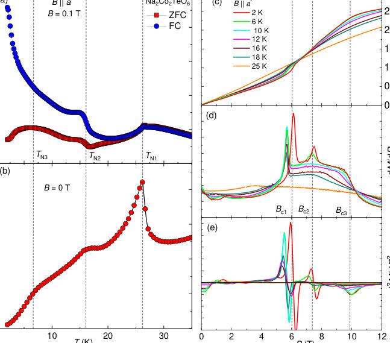
<figcaption class="paper-figure-caption"><b>Fig 1.</b> FIG. 1. Magnetization and specific heat: (a) Zero-field cooled (ZFC) and field-cooled (FC) DC magnetic susceptibility versus T measured at B = 0.1 T. (b) Specific heat of NCTO in B = 0 T. The grey dotted lines indicate phase transitions. (c) Field-dependent magnetization, M(B), for NCTO at different temperatures down to 2 K. (d,e) The first and second derivative of M(B). The grey dotted lines indicate the positions of the critical fields.</figcaption>
</figure>
<figure class="paper-figure-card">
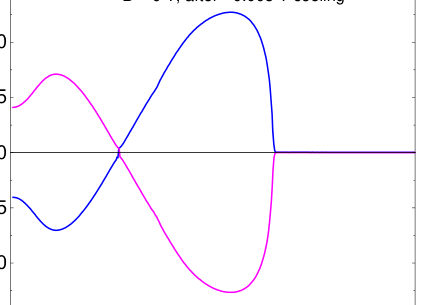
<figcaption class="paper-figure-caption"><b>Fig 2.</b> FIG. 2. Residual moment: Temperature dependent magnetiza- tion measured in zero field after cooling the sample in weak train- ing fields for (a) in-plane (B ∥a∗) and (b) out-of-plane (B ∥c) directions.</figcaption>
</figure>
<figure class="paper-figure-card">
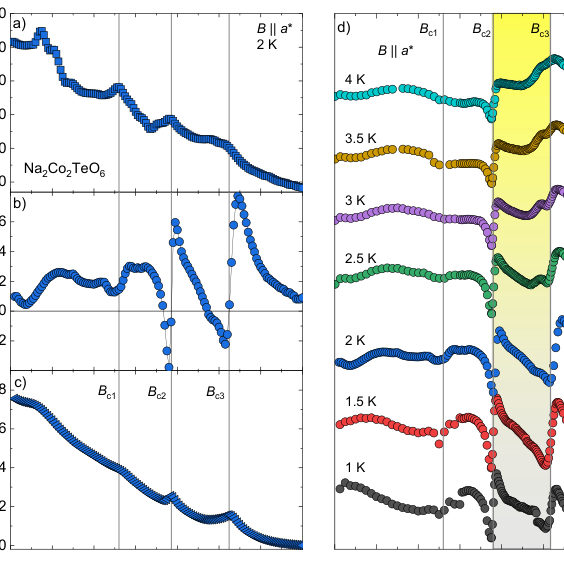
<figcaption class="paper-figure-caption"><b>Fig 3.</b> FIG. 3. Field dependence of ΓB and specific heat: (a) Specific heat as a function of magnetic field at T = 2 K. (b) Magnetic Grüneisen parameter ΓB as a function of magnetic field at T = 2 K. (c) Field evolution of magnetic entropy at T = 2 K. (d) Field evolution of ΓB at different temperatures down to 1 K. The data are vertically offset for clarity. The gray lines indicate the position of the critical fields. The region between Bc2 and Bc3 is presented in yellowish-gray color. The data in this figure are shown for the increasing field-sweep cycle.</figcaption>
</figure>
<figure class="paper-figure-card">
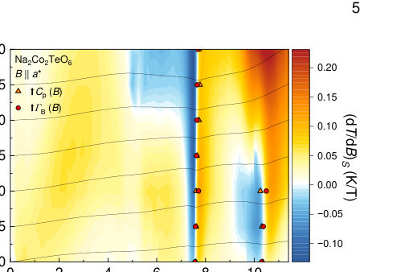
<figcaption class="paper-figure-caption"><b>Fig 4.</b> FIG. 4. Colour map: Colour map of the adiabatic MCE as a function of temperature T and magnetic field B for B ∥a∗. The color scale represents (dT/dB)S in units of K/T, where positive (yellow–red regions) and negative (blue regions) values highlight distinct field-induced regimes. The black lines display adiabatic temperature traces. Pronounced features near ∼8 T and ∼10– 11 T mark phase boundaries consistent with the critical fields dis- cussed in the text. The triangles and circles are from the position of broad maxima in Cp(B) and zero-crossings in ΓB which signal the appearance and disappearance of phase III as a function of field.</figcaption>
</figure>
<figure class="paper-figure-card">
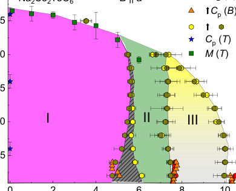
<figcaption class="paper-figure-caption"><b>Fig 5.</b> FIG. 5. B–T phase diagram of NCTO: To construct the mag- netic phase diagram, transition points were identified from charac- teristic features in thermodynamic and magnetic measurements. For temperature sweeps, peaks in d[χ(T)T]/dT and anomalies in the specific heat Cp(T) were used. For field sweeps, the phase boundaries were determined from peaks and broad minima in dM/dB and d2M/dB2, maxima in the field-dependent specific heat Cp(B), and zero crossings in the magnetic Grüneisen pa- rameter ΓB.</figcaption>
</figure>
</div>

<p><strong>Summary.</strong> This work presents a detailed thermodynamic investigation of $ ext{Na}_2   ext{Co}_2   ext{TeO}_6$ under high magnetic fields to probe its potential as a Quantum Spin Liquid. By measuring specific heat and magnetization, the authors identify three distinct field-induced phase transitions. Crucially, they argue that the observed thermodynamic behavior contradicts the expected signatures of a QSL in one of the intermediate phases.</p>
<p><strong>Why it may be interesting.</strong> The detailed thermodynamic mapping of field-induced transitions in a strongly correlated magnetic material like a cobaltate provides crucial experimental constraints for theoretical models of exotic quantum states, such as QSLs.</p>
<details>
<summary>Detailed structure</summary>
<p><strong>Main problem.</strong> The study investigates the nature of field-induced ordered intermediate phases in the honeycomb cobaltate $   ext{Na}_2   ext{Co}_2   ext{TeO}_6$, specifically testing the hypothesis that it hosts Quantum Spin Liquid (QSL) behavior.</p>
<p><strong>Main result.</strong> The thermodynamic measurements reveal successive field-induced transitions, but the phase between $B_{c2}$ and $B_{c3}$ lacks the expected enhanced magnetic entropy of a QSL, suggesting a distinct ordered state.</p>
<p><strong>Method.</strong> The research employed a comprehensive thermodynamic study using magnetization, specific heat, and magnetocaloric-effect measurements across a low-temperature, high-field phase diagram.</p>
<p><strong>Model / system.</strong> The physical system is the honeycomb cobaltate $    ext{Na}_2   ext{Co}_2   ext{TeO}_6$, which is studied as a candidate material for realizing QSL behavior, often compared to theoretical models like the Kitaev model.</p>
<p><strong>Key observables.</strong> Magnetization ($M$), specific heat ($C_p$), magnetic Grüneisen parameter ($\Gamma_B$), and magnetic entropy ($\Delta S$).</p>
<p><strong>Important parameters / regimes.</strong> In-plane magnetic fields ($B \parallel a^*$) at critical values $B_{c1} \simeq 6 	ext{ T}$, $B_{c2} \simeq 7.8 	ext{ T}$, and $B_{c3} \simeq 10.4 	ext{ T}$.</p>
<p><strong>Assumptions / limitations.</strong> The analysis assumes that sharp anomalies in thermodynamic quantities correspond to well-defined phase transitions, and that the QSL state would exhibit specific entropy signatures.</p>
<p><strong>Figures summary.</strong> Figures show $M$ and $C_p$ vs $T$ and $B$, and derivatives like $dM/dB$ and $d^2M/dB^2$, highlighting the three critical fields $B_{c1}, B_{c2}, B_{c3}$ through various anomalies.</p>
<p><strong>Paper structure.</strong> The paper systematically presents thermodynamic measurements ($M, C_p, \Gamma_B$) across the field-temperature phase diagram, identifying three successive transitions and analyzing the thermodynamic signatures of the resulting intermediate phases.</p>
</details>
<details>
<summary>Abstract</summary>
<p>The honeycomb cobaltate Na$_2$Co$_2$TeO$_6$ has recently been proposed as a candidate material for hosting field-induced quantum spin liquid (QSL) behavior. Here, we present a comprehensive thermodynamic study of its low-temperature, high-field phase diagram using magnetization, specific heat, and magnetocaloric-effect measurements down to 1 K. In zero field, we observe a weak residual moment that provides further insight into the nature of the magnetic ground state. For in-plane magnetic fields ($B \parallel a^*$), we identify three field-induced transitions at $B_{c1} \simeq 6$ T, $B_{c2} \simeq 7.8$ T, and $B_{c3} \simeq 10.4$ T. The magnetic Grüneisen parameter and specific heat reveal clear thermodynamic signatures of these successive phase transitions enclosing two intermediate phases. Contrary to expectations for a field-induced QSL, the phase between $B_{c2}$ and $B_{c3}$ lacks enhanced magnetic entropy but instead shows behavior consistent with a distinct ordered state. Above $B_{c3}$, the absence of additional anomalies indicates a crossover to a conventional spin-polarized regime. Our results place stringent thermodynamic constraints on the proposed QSL scenario in Na$_2$Co$_2$TeO$_6$, calling for further microscopic investigations to establish the precise nature of the field-induced phases.</p>
</details>
<p><sub><a href="#top">↑ back to top</a></sub></p>

<p><a id="paper-2605.16168"></a></p>
<h3 id="supergravity-flows-wormholes-and-their-pseudo-hermitian-holographic-duals"><a href="http://arxiv.org/abs/2605.16168v1">Supergravity flows, wormholes and their pseudo-Hermitian holographic duals</a></h3>
<p><strong>Authors:</strong> Jose M. Begines, Antón F. Faedo, Carlos Hoyos, Daniele Musso<br>
<strong>Type:</strong> theory · <strong>Category:</strong> other · <strong>PDF:</strong> <a href="https://arxiv.org/pdf/2605.16168v1">https://arxiv.org/pdf/2605.16168v1</a><br>
<strong>Analysis basis:</strong> full PDF text, analyzed in chunks
<strong>Topic relevance:</strong> <code>entanglement &amp; information structure</code> <strong>3/5</strong> · <code>Keldysh / 2PI / non-Gaussian methods</code> <strong>1/5</strong></p>
<div class="figure-strip-hint">↔ Scroll figures horizontally</div>
<div class="paper-figures-scroll">
<figure class="paper-figure-card">
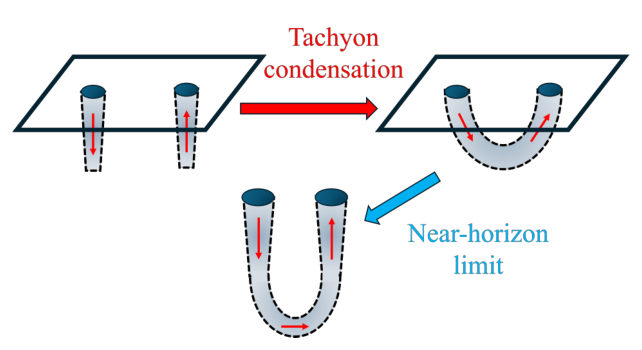
<figcaption class="paper-figure-caption"><b>Fig 1.</b> Figure 1. Possible formation of the wormhole. Two stacks of branes and anti-branes form throats inside an asymptotically flat spacetime when they backreact. Condensation of the open string tachyon makes the two throats connect forming a wormhole. In the near-horizon limit the geometry is restricted to the interior of the wormhole, that connects two asymptotically AdS spacetimes.</figcaption>
</figure>
<figure class="paper-figure-card">
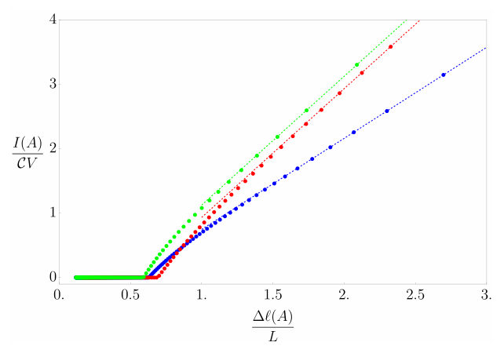
<figcaption class="paper-figure-caption"><b>Fig 2.</b> Figure 2. Mutual information of a strip I(A)/(CV (T d−2)) as a function of the width ∆ℓ(A)/L, with C = L/Gd+1. The cases represented here are the wormholes obtained from the analytic extensions of: 1. Coulomb branch of N = 4 SYM (blue), 2. Coulomb branch of ABJM (red), and 5. GPPZ (green). The dots are computed numerically using (4.25) and (4.26), and the dashed lines are linear fits at large values of the width. The slopes of the fits agree with (4.30).</figcaption>
</figure>
</div>

<p><strong>Summary.</strong> This work explores supergravity solutions featuring traversable wormholes, interpreting them holographically as dual to entangled states of quantum field theories. The key theoretical insight is that these dual theories exhibit pseudo-Hermitian and PT-symmetric properties. The methodology combines advanced techniques from general relativity, string theory, and quantum information theory.</p>
<p><strong>Why it may be interesting.</strong> The connection between gravitational phenomena (wormholes, supergravity) and the mathematical structure of PT-symmetry and pseudo-Hermiticity provides a rich theoretical framework relevant to non-Hermitian quantum mechanics.</p>
<details>
<summary>Detailed structure</summary>
<p><strong>Main problem.</strong> The paper investigates supergravity flows and wormhole solutions, focusing on their holographic duals which are hypothesized to be pseudo-Hermitian and PT-symmetric.</p>
<p><strong>Main result.</strong> The authors demonstrate that wormhole solutions can be interpreted as the low-energy theory of branes/anti-branes after tachyon condensation, dual to an entangled state of two copies of the boundary QFT.</p>
<p><strong>Method.</strong> The analysis combines analytic continuation of supergravity solutions, stability analysis of fluctuations around domain walls, and calculating mutual information for the dual quantum field theories.</p>
<p><strong>Model / system.</strong> The model involves consistent truncations of supergravity theories, leading to domain wall solutions connecting asymptotically Anti-de Sitter (AdS) spacetimes. The dual system is a quantum field theory exhibiting pseudo-Hermiticity and PT-symmetry.</p>
<p><strong>Key observables.</strong> Mutual information, Goldstone bosons, the metric remaining real-valued after analytic extension, and the spectrum of metric fluctuations ($M^2$).</p>
<p><strong>Important parameters / regimes.</strong> The periodicity of the superpotential $W(\eta)$ (e.g., $2\pi$), the separation $X$ between brane stacks, and the radial coordinate $r$ or $\eta$.</p>
<p><strong>Assumptions / limitations.</strong> The analysis assumes the dual theory is best understood when the metric remains real, and it relies on linearizing fluctuations around background solutions.</p>
<p><strong>Figures summary.</strong> Figures illustrate the formation of wormholes via tachyon condensation connecting two throats, and the general structure of the effective action and potential governing the dynamics.</p>
<p><strong>Paper structure.</strong> The paper proceeds by studying analytic extensions of solutions, interpreting wormholes via tachyon condensation, arguing for the pseudo-Hermitian dual, and concluding with stability analysis of fluctuations.</p>
</details>
<details>
<summary>Abstract</summary>
<p>We find solutions to consistent truncations of supergravity where some real scalars are analytically extended to imaginary values, ensuring the metric remains real-valued. Among the solutions there are Lorentzian traversable wormholes connecting two asymptotically Anti-de Sitter spacetimes and flows that have a real metric also when uplifted to ten or eleven dimensions. We argue that the holographic duals are pseudo-Hermitian and $PT$-symmetric theories. Wormhole solutions also admit an interpretation as the low-energy theory of two stacks of branes and antibranes after tachyon condensation. The wormhole is then dual to an entangled state of two copies of the theory that lives on a stack of branes. We present some evidence by computing the mutual information between the theories at each boundary and by identifying the Goldstone bosons associated to the breaking of the two copies of Poincaré symmetry to their diagonal subgroup.</p>
</details>
<p><sub><a href="#top">↑ back to top</a></sub></p>

<p><a id="paper-2605.15600"></a></p>
<h3 id="the-role-of-wigner-rotation-in-estimating-the-specific-angular-momentum-of-a-kerr-spacetime"><a href="http://arxiv.org/abs/2605.15600v1">The role of Wigner rotation in estimating the specific angular momentum of a Kerr spacetime</a></h3>
<p><strong>Authors:</strong> F. J. Lobo, M. Rivera-Tapia, G. Rubilar, A. Delgado<br>
<strong>Type:</strong> theory · <strong>Category:</strong> other · <strong>PDF:</strong> <a href="https://arxiv.org/pdf/2605.15600v1">https://arxiv.org/pdf/2605.15600v1</a><br>
<strong>Analysis basis:</strong> full PDF text, analyzed in chunks
<strong>Topic relevance:</strong> <code>interference shaping light</code> <strong>3/5</strong> · <code>quantum measurements</code> <strong>1/5</strong></p>
<div class="figure-strip-hint">↔ Scroll figures horizontally</div>
<div class="paper-figures-scroll">
<figure class="paper-figure-card">
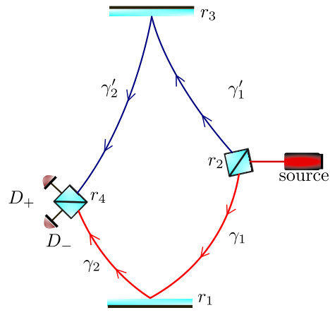
<figcaption class="paper-figure-caption"><b>Fig 1.</b> FIG. 1: Geodesic interferometer: A single photon emit- ted from a source at radial coordinate r2 is prepared in a superposition of states propagating along two paths. One path component travels towards r1 and reflects, while the other travels towards r3 and reflects. Both reflected com- ponents subsequently propagate to the radial coordinate r4, where they are recombined and measured.</figcaption>
</figure>
<figure class="paper-figure-card">
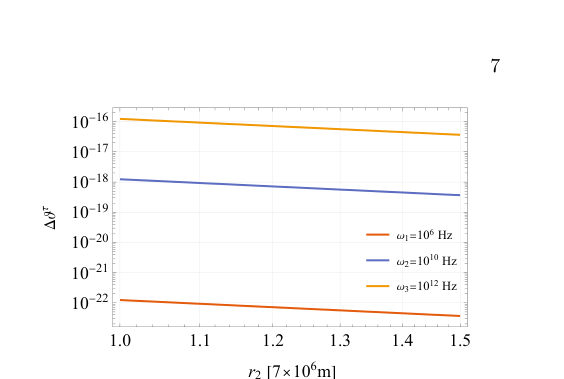
<figcaption class="paper-figure-caption"><b>Fig 2.</b> FIG. 2: Phase difference ∆ϑτ from Eq. (56) as a function of r2 for ω1 = 106 Hz (red line), ω2 = 1010 Hz (blue line) and ω3 = 1012 Hz (yellow line), with l = 0.3 m and h = 0.7 m.</figcaption>
</figure>
<figure class="paper-figure-card">

<figcaption class="paper-figure-caption"><b>Fig 3.</b> FIG. 3: Wigner phase rotation ∆φ from Eq. (58) as a function of the angular coordinate θ. Each line represents the distance r2 of the source of photons from the center of the Earth for ∆r = r3 −r1 = 1 m. The red continuous line corresponds to r2 = REarth and the blue continuous line to r2 = 2 REarth.</figcaption>
</figure>
<figure class="paper-figure-card">
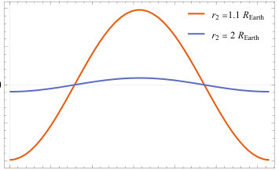
<figcaption class="paper-figure-caption"><b>Fig 4.</b> FIG. 4: Wigner phase rotation ∆φ from Eq. (58) as a function of the angular coordinate θ. Each line represents the distance r2 of the source of photons from the center of the Earth for ∆r = r3 −r1 ≈2 × 103 m. The red continuous line corresponds to r2 = 1.1 REarth and the blue continuous line to r2 = 2 REarth.</figcaption>
</figure>
<figure class="paper-figure-card">
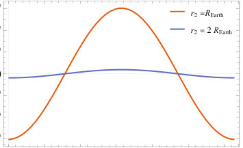
<figcaption class="paper-figure-caption"><b>Fig 5.</b> Figure 3 shows ∆ϑ as a function of the angular coor- dinate θ for the case of Earth with REarth ≈7 × 106 m and ∆r := r3 −r1 ≈1 m with r2 = REarth (red line) and r2 = 2REarth (blue line). As is apparent from this figure, the Wigner phase ∆ϑ reaches values of the order of 10−30, which is several orders of magnitude smaller than the phase shift ∆ϑτ generated by the arrival time difference. The value of ∆ϑ can be increased by consid- ering higher values of ∆r. This is shown in Fig. 4, where ∆r ≈2 × 103 m, leading to Wigner phase values on the order of 10−23.</figcaption>
</figure>
</div>

<p><strong>Summary.</strong> This theoretical paper develops a method to measure the specific angular momentum of a Kerr spacetime using a quantum geodesic interferometer. By analyzing the interference visibility, which depends on both gravitational time delay and polarization rotation (Wigner phase), the authors derive an estimate for the spacetime parameter $a$. The results suggest that such measurements could achieve high precision with sufficiently large detector separations.</p>
<p><strong>Why it may be interesting.</strong> It provides a concrete, quantum-metrology approach to measuring fundamental parameters of General Relativity (like $a$) using quantum interference effects, bridging quantum optics and gravitational physics.</p>
<details>
<summary>Detailed structure</summary>
<p><strong>Main problem.</strong> The paper aims to estimate the specific angular momentum ($a$) of a Kerr spacetime by analyzing the polarization rotation of light.</p>
<p><strong>Main result.</strong> The interferometric visibility is a signature of two relativistic effects (time delay and polarization rotation), allowing for an estimate of $a$ with a relative error potentially reaching $10^{-6}$ for large baselines.</p>
<p><strong>Method.</strong> The analysis uses a geodesic interferometer model, calculating the detection probability based on phase differences derived using the WKB approximation in the weak-field and slow-rotation limits.</p>
<p><strong>Model / system.</strong> The system is light (single photon) propagating along null geodesics within the curved background of a Kerr spacetime, analyzed using the tetrad formalism.</p>
<p><strong>Key observables.</strong> Interferometric visibility, detection probability ($P_+$), gravitational time delay phase difference ($\Delta\vartheta_	au$), and Wigner phase difference ($\Delta\vartheta$).</p>
<p><strong>Important parameters / regimes.</strong> Specific angular momentum ($a$), mass ($m$), interferometer separation ($\Delta r$), and probability error ($\delta p$).</p>
<p><strong>Assumptions / limitations.</strong> The analysis relies on the slow rotation and weak field approximations, and the geometric optics approximation for the photon's localized qubit representation.</p>
<p><strong>Figures summary.</strong> Figures illustrate the geodesic interferometer setup, showing the dependence of phase differences ($\Delta\vartheta_	au$ and $\Delta\vartheta$) on source positions and angular coordinates, and the relative error $\delta a/a$ vs. baseline separation $\Delta r$.</p>
<p><strong>Paper structure.</strong> The paper develops the theoretical framework by defining the interferometer setup, calculating the two distinct phase contributions (time delay and Wigner rotation) using the WKB approximation, and finally deriving the estimate for $a$ from the measured detection probability $P_+$.</p>
</details>
<details>
<summary>Abstract</summary>
<p>We study the rotation of the polarization due to the gravitational field in the Kerr spacetime and the possibility of estimating the specific angular momentum that parameterizes this metric. Our approach is based on a geodesic interferometer, that is, a Mach-Zehnder interferometer whose arms are defined by null geodesics, and a single photon propagating within it. We show that the detection probability at the output ports of the interferometer is a function of two phase differences, one arising from the gravitational time delay and the other from the polarization rotation, both computed under the slow rotation and weak field approximations. Thereby, the interferometric visibility is a signature of two relativistic effects. Using the detection probability, we obtain an estimate for the specific angular momentum and characterize its uncertainty.</p>
</details>
<p><sub><a href="#top">↑ back to top</a></sub></p>

<p><a id="paper-2605.15439"></a></p>
<h3 id="additivity-results-for-the-renyi-2-entanglement-of-purification"><a href="http://arxiv.org/abs/2605.15439v1">Additivity Results for the Rényi-2 Entanglement of Purification</a></h3>
<p><strong>Authors:</strong> Shokoufe Faraji, Zahra Baghali Khanian<br>
<strong>Type:</strong> theory · <strong>Category:</strong> quantum information and computing · <strong>PDF:</strong> <a href="https://arxiv.org/pdf/2605.15439v1">https://arxiv.org/pdf/2605.15439v1</a><br>
<strong>Analysis basis:</strong> full PDF text, analyzed in chunks
<strong>Topic relevance:</strong> <code>entanglement &amp; information structure</code> <strong>3/5</strong></p>
<div class="figure-strip-hint">↔ Scroll figures horizontally</div>
<div class="paper-figures-scroll">
<figure class="paper-figure-card">
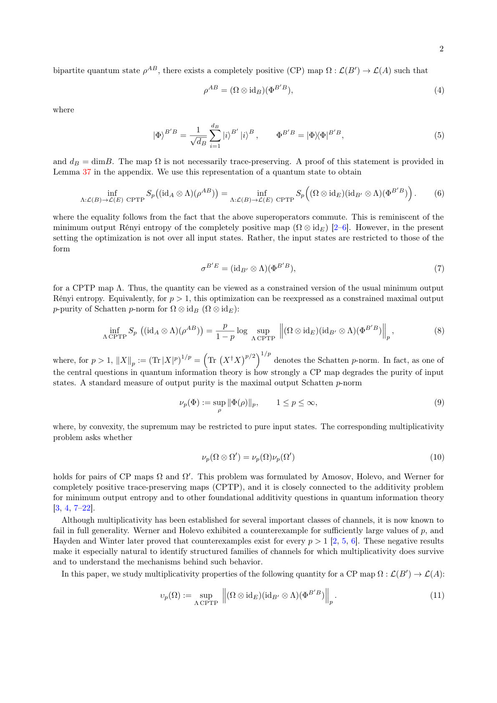
<figcaption class="paper-figure-caption"><b>Fig 1.</b> Low-resolution page preview, page 2</figcaption>
</figure>
<figure class="paper-figure-card">
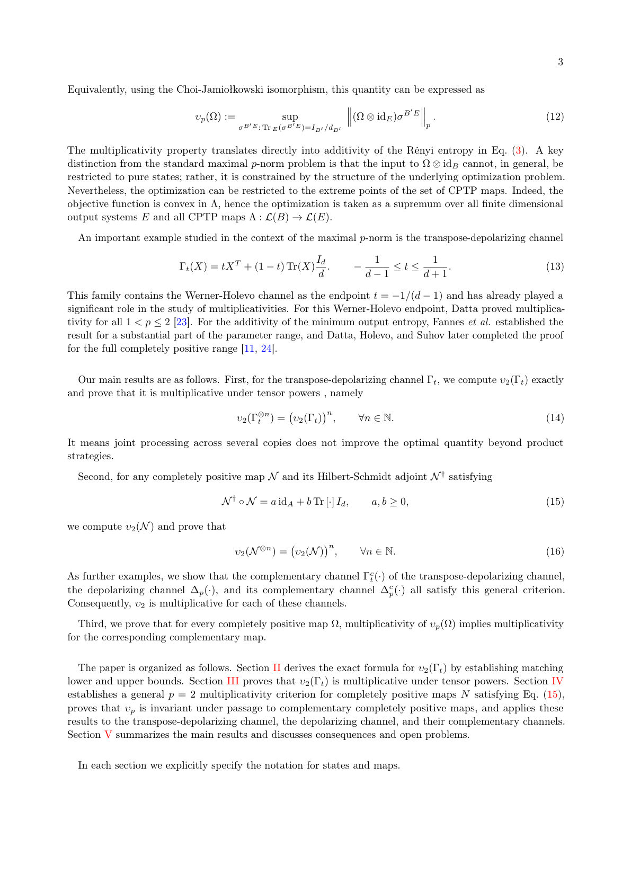
<figcaption class="paper-figure-caption"><b>Fig 2.</b> Low-resolution page preview, page 3</figcaption>
</figure>
<figure class="paper-figure-card">
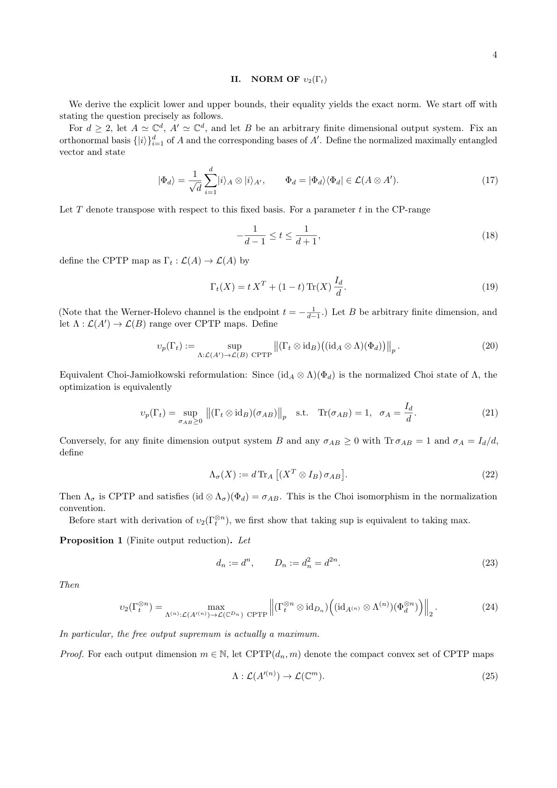
<figcaption class="paper-figure-caption"><b>Fig 3.</b> Low-resolution page preview, page 4</figcaption>
</figure>
<figure class="paper-figure-card">
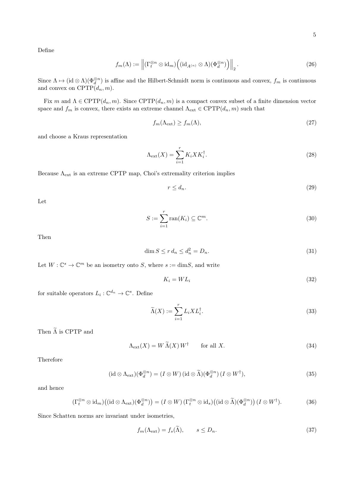
<figcaption class="paper-figure-caption"><b>Fig 4.</b> Low-resolution page preview, page 5</figcaption>
</figure>
<figure class="paper-figure-card">
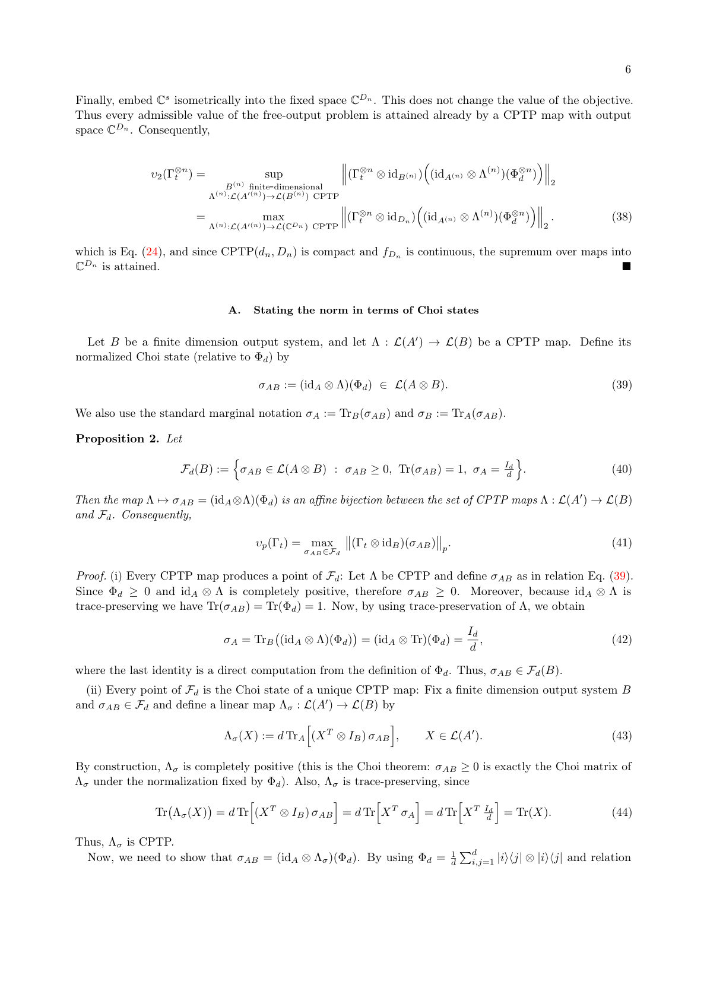
<figcaption class="paper-figure-caption"><b>Fig 5.</b> Low-resolution page preview, page 6</figcaption>
</figure>
</div>

<p><strong>Summary.</strong> This paper rigorously analyzes the additivity and multiplicativity of the Rényi-2 entanglement of purification for quantum channels. By reformulating the entanglement measure as a constrained Schatten norm optimization, the authors derive a general criterion that guarantees multiplicativity for certain classes of channels, proving this property for the important transpose-depolarizing channel.</p>
<p><strong>Why it may be interesting.</strong> The results provide concrete, general mathematical criteria for when entanglement measures exhibit simple scaling (multiplicativity) under tensor products, which is crucial for understanding resource theories in quantum information.</p>
<details>
<summary>Detailed structure</summary>
<p><strong>Main problem.</strong> The paper determines the additivity/multiplicativity properties of the Rényi-2 entanglement of purification, $
u_2(\Omega)$, for various quantum channels.</p>
<p><strong>Main result.</strong> The entanglement measure $
u_2(\Gamma^{\otimes n}_t)$ is proven to be multiplicative, $
u_2(\Gamma^{\otimes n}_t) = (
u_2(\Gamma_t))^n$, and a general criterion for this multiplicativity is established for CP maps.</p>
<p><strong>Method.</strong> The analysis reformulates the entanglement measure as a constrained maximum output Schatten $p$-norm problem, utilizing techniques involving the Choi-Jamiołkowski isomorphism and quadratic forms.</p>
<p><strong>Model / system.</strong> The study focuses on quantum channels, particularly the transpose-depolarizing channel $\Gamma_t$, and its tensor powers acting on bipartite quantum states.</p>
<p><strong>Key observables.</strong> The Rényi-2 entanglement of purification, $
u_2(\Omega)$, and the associated output Schatten 2-norm, $\upsilon_2(\Omega)$.</p>
<p><strong>Important parameters / regimes.</strong> The Rényi parameter $p$ (focusing on $p=2$), the dimension $d$, and the channel parameter $t$.</p>
<p><strong>Assumptions / limitations.</strong> The derivation relies on reducing the optimization problem to extreme points and establishing structural properties of the channels (e.g., the criterion $N^\dagger \circ N = a 	ext{id}_A + b 	ext{Tr}[\cdot]	ext{Id}$).</p>
<p><strong>Paper structure.</strong> The paper proceeds by first reformulating the entanglement measure, calculating the value for the specific channel $\Gamma_t$ (establishing bounds and a closed form), and then generalizing the result by proving the multiplicativity property for tensor powers and establishing the general criterion for additivity.</p>
</details>
<details>
<summary>Abstract</summary>
<p>We reformulate the Rényi entanglement of purification as a constrained minimum output Rényi entropy problem. Equivalently, for $p>1$, this formulation can be expressed in terms of a constrained maximal output Schatten $p$-norm. More precisely, for a completely positive map $Ω:L(B')\to L(A)$, we consider the quantity $\upsilon_p(Ω)$ defined by optimizing $\|(Ω\otimes \mathrm{id}_E)(σ^{B'E})\|_p$ over all bipartite states $σ^{B'E}$ whose $B'$-marginal is maximally mixed. We focus on the case $p=2$. First, we compute $\upsilon_2$ for the transpose-depolarizing channel and prove that it is multiplicative under tensor powers. We then establish a general multiplicativity criterion: whenever a completely positive map $N:L(B')\to L(A)$ satisfies $N^{\dagger} \mathbin{\circ} N=a\,\mathrm{id}_A+b\,\mathrm{Tr}[\cdot]\,I_d$ for some constants $a,b\ge 0$, where $N^{\dagger}$ denotes the Hilbert-Schmidt adjoint of $N$, the quantity $\upsilon_2(N)$ is multiplicative under tensor powers. Examples of channels satisfying this criterion include the transpose-depolarizing channel, the depolarizing channel, and their respective complementary channels. Furthermore, we show that, for every completely positive map $Ω$, multiplicativity of $\upsilon_p(Ω)$ implies multiplicativity for its complementary map. This yields the corresponding additivity statements for the associated Rényi-2 entanglement of purification.</p>
</details>
<p><sub><a href="#top">↑ back to top</a></sub></p>

<p><a id="paper-2605.16218"></a></p>
<h3 id="lattice-relaxation-flattens-chern-bands-in-rhombohedral-graphene-stacks"><a href="http://arxiv.org/abs/2605.16218v1">Lattice Relaxation Flattens Chern Bands in Rhombohedral Graphene Stacks</a></h3>
<p><strong>Authors:</strong> Luca Nashabeh, Héctor Ochoa<br>
<strong>Type:</strong> theory · <strong>Category:</strong> strongly correlated electrons · <strong>PDF:</strong> <a href="https://arxiv.org/pdf/2605.16218v1">https://arxiv.org/pdf/2605.16218v1</a><br>
<strong>Analysis basis:</strong> full PDF text, analyzed in chunks
<strong>Topic relevance:</strong> <code>analog quantum simulation</code> <strong>3/5</strong></p>
<div class="figure-strip-hint">↔ Scroll figures horizontally</div>
<div class="paper-figures-scroll">
<figure class="paper-figure-card">
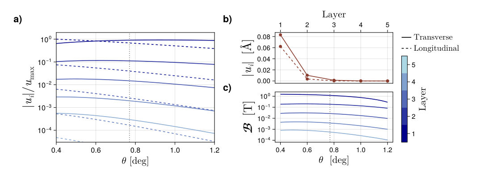
<figcaption class="paper-figure-caption"><b>Fig 1.</b> FIG. 2. Results of relaxation for η = 1. a) The transverse (continuum lines) and longitudinal (dashed lines) components of the relaxation displacement fields have different behaviors as functions of angle. While the longitudinal field monotonically decreases with twist angle, the transverse field has maxima at different critical angles depending on the layer number n. b) As a function of layer number, both fields show an expected exponential falloff, with characteristic length l ∼1.6 Å at θ = 0.77◦. c) The pseudomagnetic field B is concentrated in the contact layer, and depends strongly on angle only in the farthest layers. η = −1 is qualitatively similar, with negligible differences in the...</figcaption>
</figure>
<figure class="paper-figure-card">
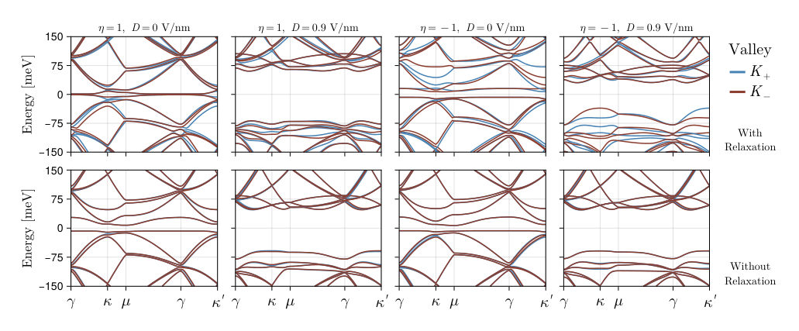
<figcaption class="paper-figure-caption"><b>Fig 2.</b> FIG. 3. Calculated single-electron band structure for different stacking configurations and displacement fields, plotted over the moiré Brillouin zone. The top row includes strain relaxation, while the bottom row does not. Note that strain relaxation introduces appreciable differences between the two valleys.</figcaption>
</figure>
<figure class="paper-figure-card">
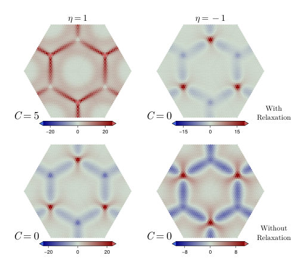
<figcaption class="paper-figure-caption"><b>Fig 3.</b> FIG. 4. K+ first conduction band Berry curvature Ω(k) in the relaxed (upper) and unrelaxed (lower) cases for D = 0. In particular, in the η = 1 stacking configuration, relaxation sufficiently perturbs the band structure, resulting in a non- zero Chern number at the single-particle level. Three recip- rocal unit cells are shown, and the color scale is given by Ω(k) · AMBZ/(2π).</figcaption>
</figure>
<figure class="paper-figure-card">
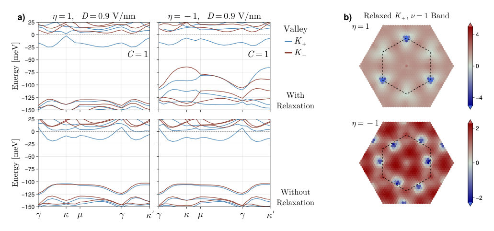
<figcaption class="paper-figure-caption"><b>Fig 4.</b> FIG. 5. a) The Hartree-Fock single-electron spectrum with and without relaxation effects for filling ν = 1 (spinless). Fully including electronic interactions in the moiré distant regime, relaxation is essential for the development of a flat valley-polarized electron band. The difference between the two stacking configurations is only significant with relaxation effects. An 18 × 18 k-mesh is used, with ±3 active bands around the Fermi level per valley. b) The Berry curvature of the relaxed Hartree-Fock filled conduction band; three unit cells are shown with the 1st Brillouin zone marked. The further flattening of the η = −1 stacking is manifest in its smoother curvature. A 20 × 20 k-mesh is...</figcaption>
</figure>
<figure class="paper-figure-card">
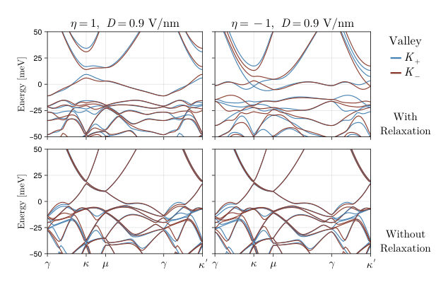
<figcaption class="paper-figure-caption"><b>Fig 5.</b> FIG. 6. Relaxation helps isolate the filled conduction band in the Hartree band structure at D = 0.9 V/nm and filling ν = 1. This isolation is greater for η = 1, but the band is slightly flatter for η = −1. Without relaxation, both stacking configurations are similar, with the filled conduction band not being isolated. A 24 × 24 k-mesh and ϵ = 6 is used.</figcaption>
</figure>
</div>

<p><strong>Summary.</strong> This theoretical work models moiré graphene stacks on hBN, demonstrating that lattice relaxation is not a minor perturbation. By coupling strain fields with electron-electron interactions via Hartree-Fock theory, the authors show that these effects are necessary to stabilize and isolate topological Chern bands with a quantized Chern number.</p>
<p><strong>Why it may be interesting.</strong> The interplay between geometric strain (lattice relaxation) and long-range Coulomb interactions to stabilize topological phases is highly relevant to understanding emergent quantum phenomena in solid-state systems.</p>
<details>
<summary>Detailed structure</summary>
<p><strong>Main problem.</strong> The study investigates how lattice relaxation effects influence the topological electronic structure, specifically the flattening and isolation of Chern bands, in moiré rhombohedral graphene stacks.</p>
<p><strong>Main result.</strong> Lattice relaxation is shown to be crucial, working in tandem with long-range Coulomb interactions, to flatten and isolate a valley-polarized electron band exhibiting a non-zero Chern number (|C|=1).</p>
<p><strong>Method.</strong> The research employs self-consistent Hartree-Fock calculations to model the interacting electron system, incorporating strain-induced pseudo-gauge fields derived from lattice relaxation.</p>
<p><strong>Model / system.</strong> The system is rhombohedral graphene stacked on hBN, forming a moiré superlattice. The model Hamiltonian incorporates intralayer hopping modified by strain fields and interlayer tunneling terms.</p>
<p><strong>Key observables.</strong> Chern number (C), band structure (gaps, flattening), pseudo-magnetic field (B), and electronic differences between stacking configurations.</p>
<p><strong>Important parameters / regimes.</strong> Twist angles ($ heta$), filling factor ($
u=1$), dielectric constant ($\epsilon$), and the strength of the displacement field ($D$).</p>
<p><strong>Assumptions / limitations.</strong> The analysis assumes lattice relaxation manifests as a propagating lattice mismatch and that the strain fields decay exponentially with the number of layers.</p>
<p><strong>Figures summary.</strong> Figures illustrate the exponential decay of displacement fields, the band structure comparison with and without relaxation, and the resulting topological character (Chern number) under varying interaction strengths.</p>
<p><strong>Paper structure.</strong> The paper systematically builds the model by first defining the lattice relaxation effects on the Hamiltonian, then calculating single-particle properties, and finally incorporating electron-electron interactions via Hartree-Fock theory to determine the topological state.</p>
</details>
<details>
<summary>Abstract</summary>
<p>Motivated by recent observations of integer and fractional Chern insulators in rhombohedral graphene stacks aligned with hexagonal boron nitride (hBN), we propose and study a model in which the moiré potential is defined by the pattern of layer-shear strain fields produced by lattice relaxation in these heterostructures. Although these strain fields decrease exponentially with the number of layers, their imprints on electrons residing away from the contact layer are non-negligible. In the absence of a displacement field, lattice relaxation effects amplify the electronic differences among the two different stackings with hBN. These differences, although attenuated at the single-electron level, survive in the so-called moiré-distant regime and are further enhanced with the inclusion of electron interactions. We find that lattice relaxation plays a crucial role in flattening and isolating a valley-polarized Hartree-Fock electron band with $|C|=1$ Chern number. Our results challenge the conventional wisdom on moiré effects in these heterostructures by illustrating the intertwined effects of long-range Coulomb interactions and lattice relaxation, and opens the door to explore different regimes of twist angles and displacement fields for the search for topological states.</p>
</details>
<p><sub><a href="#top">↑ back to top</a></sub></p>

<p><a id="paper-2605.15408"></a></p>
<h3 id="second-order-moment-equivalence-of-twisted-gaussian-schell-model-beams-and-orbital-angular-momentum-eigenmodes"><a href="http://arxiv.org/abs/2605.15408v1">Second-order moment equivalence of twisted Gaussian Schell model beams and orbital angular momentum eigenmodes</a></h3>
<p><strong>Authors:</strong> T. Ferreira, G. Santos, S. Ayala, Lucas Hutter, E. S. Gómez, G. Lima, G. Cañas, S. P. Walborn<br>
<strong>Type:</strong> theory · <strong>Category:</strong> other · <strong>PDF:</strong> <a href="https://arxiv.org/pdf/2605.15408v1">https://arxiv.org/pdf/2605.15408v1</a><br>
<strong>Analysis basis:</strong> full PDF text, analyzed in chunks
<strong>Topic relevance:</strong> <code>interference shaping light</code> <strong>3/5</strong></p>
<div class="figure-strip-hint">↔ Scroll figures horizontally</div>
<div class="paper-figures-scroll">
<figure class="paper-figure-card">
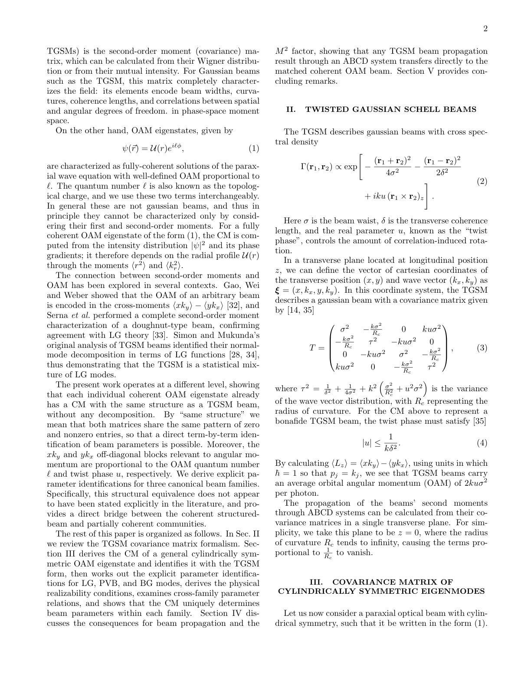
<figcaption class="paper-figure-caption"><b>Fig 1.</b> Low-resolution page preview, page 2</figcaption>
</figure>
<figure class="paper-figure-card">
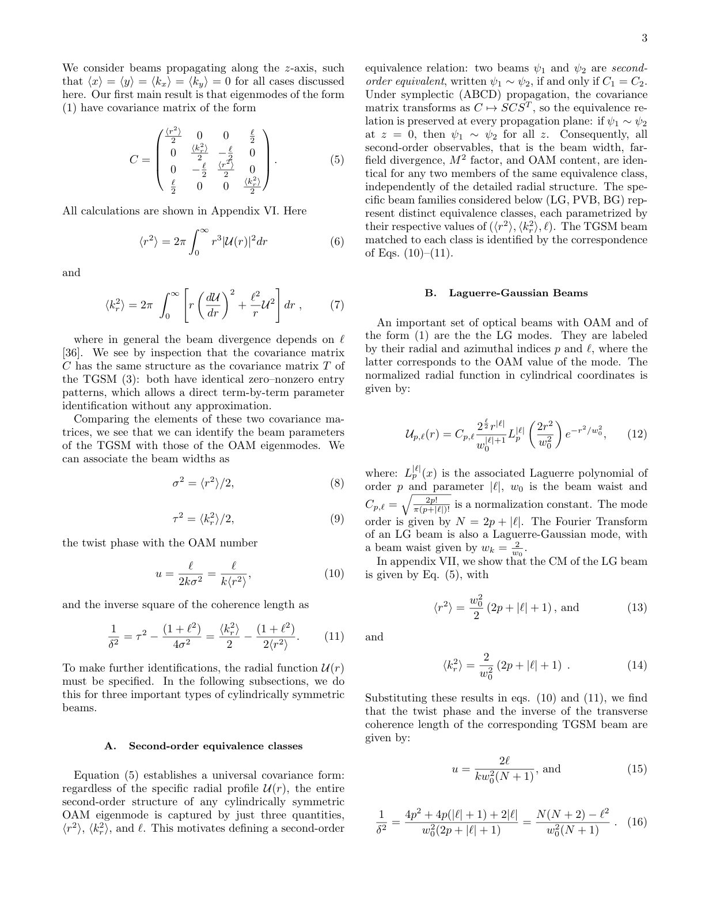
<figcaption class="paper-figure-caption"><b>Fig 2.</b> Low-resolution page preview, page 3</figcaption>
</figure>
<figure class="paper-figure-card">

<figcaption class="paper-figure-caption"><b>Fig 3.</b> Low-resolution page preview, page 4</figcaption>
</figure>
<figure class="paper-figure-card">

<figcaption class="paper-figure-caption"><b>Fig 4.</b> Low-resolution page preview, page 5</figcaption>
</figure>
<figure class="paper-figure-card">

<figcaption class="paper-figure-caption"><b>Fig 5.</b> Low-resolution page preview, page 6</figcaption>
</figure>
</div>

<p><strong>Summary.</strong> This paper proves that the second-order statistical description (covariance matrix) of any cylindrically symmetric OAM beam is mathematically identical to that of a Twisted Gaussian Schell-model (TGSM) beam. This equivalence allows researchers to use the well-established TGSM propagation toolbox to predict the beam-width evolution and divergence of complex OAM modes. It is significant because it unifies the description of coherent and partially coherent light in terms of their second-order moments.</p>
<p><strong>Why it may be interesting.</strong> This work provides a powerful, non-trivial connection between the description of highly structured, coherent light (OAM modes) and the description of partially coherent light (Schell model), unifying their second-order propagation characteristics.</p>
<details>
<summary>Detailed structure</summary>
<p><strong>Main problem.</strong> The paper establishes a rigorous mathematical equivalence between the second-order moment (covariance matrix) of coherent Orbital Angular Momentum (OAM) eigenmodes and Twisted Gaussian Schell-model (TGSM) beams.</p>
<p><strong>Main result.</strong> The covariance matrix of any cylindrically symmetric OAM eigenmode takes a universal form identical to that of a TGSM beam, allowing for direct, second-order indistinguishable parameter mapping between the two beam types.</p>
<p><strong>Method.</strong> The analysis involves deriving and comparing the covariance matrices for both beam types, utilizing the fact that the covariance matrix governs second-moment evolution under symplectic transformations.</p>
<p><strong>Model / system.</strong> The study compares two models: (1) Coherent OAM eigenmodes (including Laguerre-Gaussian, Bessel-Gaussian, and Perfect Vortex Beams) and (2) Partially coherent TGSM beams, both analyzed under the assumption of cylindrical symmetry.</p>
<p><strong>Key observables.</strong> Covariance matrix elements ($\langle r^2 
angle, \langle k_r^2 
angle$), beam-width evolution, far-field divergence, and the $M^2$ beam-quality factor.</p>
<p><strong>Important parameters / regimes.</strong> OAM quantum number ($\ell$), TGSM twist parameter ($u$), beam waist ($w$), and coherence parameters ($\sigma, \delta$).</p>
<p><strong>Assumptions / limitations.</strong> The equivalence is established for the second-order moments, and certain analyses for PVB and BG beams rely on leading-order approximations in specific parameter regimes.</p>
<p><strong>Figures summary.</strong> The notes reference a summary table (Table I) detailing the correspondence between the covariance matrix parameters for TGSM, LG, PVB, and BG beams.</p>
<p><strong>Paper structure.</strong> The paper develops the theory for both beam types independently, then compares their covariance matrices to derive the parameter mapping. It details the correspondence for specific families (LG, BG, PVB) and concludes by showing the implications for beam propagation and basis completeness.</p>
</details>
<details>
<summary>Abstract</summary>
<p>We show that the covariance matrix of any cylindrically symmetric coherent orbital angular momentum (OAM) eigenmode with quantum number $\ell$ takes a universal form depending only on $\langle r^2\rangle$, $\langle k_r^2\rangle$, and $\ell$, independently of the radial profile, and that this form is identical to the covariance matrix of a twisted Gaussian Schell-model (TGSM) beam.} More specifically, both matrices share the same pattern of zero and nonzero entries, with the off-diagonal blocks proportional to $\ell$ and the TGSM twist parameter $u$, respectively. This result holds for an arbitrary radial profile and provides direct term-by-term identification of parameters between the two sets of beams. We work out the correspondence in detail for three important families: Laguerre--Gaussian (LG), Bessel--Gaussian, and perfect vortex beams (PVBs), and derive the conditions under which each coherent OAM mode maps onto a physically realizable TGSM beam. {Because the covariance matrix governs second-moment evolution under arbitrary ABCD (symplectic) transformations, any two beams sharing the same covariance matrix are second-order indistinguishable at every propagation plane. In particular, the matched TGSM and coherent OAM beams share identical beam-width evolution, far-field divergence, and $M^2$ beam-quality factor.} In particular, the well-developed TGSM propagation toolbox applies directly to the second-order moment evolution of the three coherent families. We further show that within each beam family the covariance matrix uniquely determines the beam parameters, with exact uniqueness established for LG modes. Additional results include cross-family second-moment equivalence conditions and a proof that PVB modes form a complete orthonormal basis in the limit $w\to 0$.</p>
</details>
<p><sub><a href="#top">↑ back to top</a></sub></p>

<p><a id="paper-2605.15953"></a></p>
<h3 id="fast-convergence-of-dynamic-capacities-of-gns-symmetric-quantum-channels"><a href="http://arxiv.org/abs/2605.15953v1">Fast convergence of Dynamic Capacities of GNS-Symmetric Quantum Channels</a></h3>
<p><strong>Authors:</strong> Omar Fawzi, Li Gao, Mizanur Rahaman, Mostafa Taheri<br>
<strong>Type:</strong> theory · <strong>Category:</strong> quantum information and computing · <strong>PDF:</strong> <a href="https://arxiv.org/pdf/2605.15953v1">https://arxiv.org/pdf/2605.15953v1</a><br>
<strong>Analysis basis:</strong> full PDF text, analyzed in chunks
<strong>Topic relevance:</strong> <code>correlated / nonlocal dissipation</code> <strong>2/5</strong> · <code>entanglement &amp; information structure</code> <strong>2/5</strong> · <code>Keldysh / 2PI / non-Gaussian methods</code> <strong>1/5</strong> · <code>driven-dissipative phase transition</code> <strong>1/5</strong> · <code>methods for driven-dissipative</code> <strong>1/5</strong> · <code>non-equilibrium dynamics</code> <strong>1/5</strong> · <code>non-equilibrium universality</code> <strong>1/5</strong></p>
<div class="figure-strip-hint">↔ Scroll figures horizontally</div>
<div class="paper-figures-scroll">
<figure class="paper-figure-card">

<figcaption class="paper-figure-caption"><b>Fig 1.</b> Figure 1: Passive and active bounds on the quantum capacity of the iterated Pauli channel with ⃗p = (0.9986, 0.00047, 0.00047, 0.00047). The passive upper bound is obtained from Theorem 3.2; the passive lower bound is the hashing bound applied directly to T t ⃗p ; the 5-active and 25-active lower bounds are obtained by applying the hashing bound to the effective logical channels of the 5-qubit code and its recursive concatenation, rescaled by 1/5 and 1/25 respectively.</figcaption>
</figure>
</div>

<p><strong>Summary.</strong> This work rigorously analyzes how the information capacities of quantum systems decay over time when subjected to noise modeled by a quantum channel. By focusing on GNS-symmetric channels, the authors derive explicit exponential convergence bounds for both classical and quantum capacities. Crucially, they use these bounds to demonstrate the precise crossover point where active error correction strategies provide a provable advantage over passive ones.</p>
<p><strong>Why it may be interesting.</strong> It provides rigorous, quantitative bounds on how fast quantum information degrades under noise and precisely determines the threshold where active quantum error correction techniques outperform passive noise mitigation.</p>
<details>
<summary>Detailed structure</summary>
<p><strong>Main problem.</strong> The paper studies the time evolution and convergence rate of information capacities (classical and quantum) for quantum systems subjected to repeated noise modeled by a quantum channel.</p>
<p><strong>Main result.</strong> For GNS-symmetric channels, the one-shot and asymptotic classical and quantum capacities converge exponentially fast to their infinite-time limits. Furthermore, the analysis quantifies the advantage of active error correction over passive methods.</p>
<p><strong>Method.</strong> The analysis employs functional inequalities, quantum relative entropy bounds, and techniques involving the peripheral projection of the quantum channel to derive explicit exponential convergence bounds.</p>
<p><strong>Model / system.</strong> The system is a finite-dimensional quantum memory subjected to noise described by a quantum channel $\Phi$ applied at discrete time steps, or continuous-time quantum Markov semigroups $\{T_t\}$. The focus is on GNS-symmetric channels.</p>
<p><strong>Key observables.</strong> One-shot $\delta$-error classical/quantum capacities ($C_\delta, Q_\delta$), asymptotic capacities ($C, Q$), and the convergence rate quantified by exponential decay terms.</p>
<p><strong>Important parameters / regimes.</strong> The convergence rate depends on entropic properties like the entropy contraction coefficient ($\alpha_c$) and the Pimsner–Popa constant ($\Lambda_c(P)$).</p>
<p><strong>Assumptions / limitations.</strong> The primary results are restricted to quantum channels exhibiting GNS-symmetry with respect to a full-rank invariant state $\sigma$.</p>
<p><strong>Figures summary.</strong> Figure 1 compares the passive upper bound on quantum capacity (derived from Theorem 3.2) against active lower bounds (using 5-active and 25-active codes) for Pauli noise, showing a crossover time where active correction becomes superior.</p>
<p><strong>Paper structure.</strong> The paper builds from establishing the convergence of capacities to the peripheral projection, deriving explicit exponential bounds for one-shot and asymptotic capacities, and finally applying these bounds to compare active versus passive error correction strategies.</p>
</details>
<details>
<summary>Abstract</summary>
<p>We consider a quantum system described by a quantum channel $Φ$ that is applied at every time step and study the time evolution of its information capacities. When $Φ$ is a GNS-symmetric channel (this includes Pauli channels, for example), we give explicit exponential convergence bounds for the classical and quantum capacities. These bounds are in terms of entropic properties of $Φ$. We further illustrate how these results help quantify the performance of active versus passive error-correction setups.</p>
</details>
<p><sub><a href="#top">↑ back to top</a></sub></p>

<p><a id="paper-2605.15630"></a></p>
<h3 id="reweighting-free-energy-profiles-between-universal-machine-learning-interatomic-potentials-for-fast-consensus-building"><a href="http://arxiv.org/abs/2605.15630v1">Reweighting free energy profiles between universal machine learning interatomic potentials for fast consensus building</a></h3>
<p><strong>Authors:</strong> Sauradeep Majumdar, Miguel Steiner, Johannes C. B. Dietschreit, Swagata Roy, Daniel Willimetz, Lukaš Grajciar, Rafael Gómez-Bombarelli<br>
<strong>Type:</strong> theory · <strong>Category:</strong> statistical mechanics · <strong>PDF:</strong> <a href="https://arxiv.org/pdf/2605.15630v1">https://arxiv.org/pdf/2605.15630v1</a><br>
<strong>Analysis basis:</strong> full PDF text, analyzed in chunks
<strong>Topic relevance:</strong> <code>Keldysh / 2PI / non-Gaussian methods</code> <strong>2/5</strong> · <code>methods for driven-dissipative</code> <strong>2/5</strong> · <code>non-equilibrium dynamics</code> <strong>2/5</strong></p>
<div class="figure-strip-hint">↔ Scroll figures horizontally</div>
<div class="paper-figures-scroll">
<figure class="paper-figure-card">

<figcaption class="paper-figure-caption"><b>Fig 1.</b> Fig. 1: Illustration of the reweighting strategy used in this work. As the system, we use Li+ diffusion through an aluminum-doped zeolite (CHA), which has been studied by umbrella sampling in our previous work[16]. We take 10,000 frames per umbrella window from the source simulations (MLIP A) and evaluate their energies with the target potential (MLIP B). Reweighting of these frames to obtain the target PMF was carried out with the estimator best suited based on the variance of the potential energy differences.</figcaption>
</figure>
<figure class="paper-figure-card">

<figcaption class="paper-figure-caption"><b>Fig 2.</b> Figure 1 illustrates the reweighting strategy adopted in this work. The starting PMF of the studied system, Li+ diffusing through the pore channel of a water-solvated chabazite (CHA) zeolite, has been obtained from our previous work[16] (see Figure S1 for an illustration of the studied system). The collective variable (CV) for the system is defined as the projection of the vector connecting the midpoint between the centers of mass of the two outer 8-membered rings (forming the pore channel) and the center of mass of Li+ onto the axis of diffusion. Thus, the zero point of the CV is at the center of the pore channel connecting the two 8-membered rings[10]. We see a global minimum between 2.5...</figcaption>
</figure>
<figure class="paper-figure-card">

<figcaption class="paper-figure-caption"><b>Fig 3.</b> Fig. 2: (a) Reweighting entropy score S(z) for all target MLIPs, quantifying the effective overlap between the source (MACE-MP0) and target energy distributions at each umbrella window; values near unity indicate very high-phase space overlap or well-distributed (maximum entropy) reweighting weights, while values closer to 0 indi- cate very low phase space overlap (minimum entropy). The entropy values have been smoothed with a Gaussian filter to eliminate statistical noise and put more empha- sis on the trend. (b) PMF obtained from umbrella sampling with MACE-MP0[16] (source) compared with reweighted PMFs based on the MACE-MATPES potential using three methods: direct reweighting,...</figcaption>
</figure>
<figure class="paper-figure-card">

<figcaption class="paper-figure-caption"><b>Fig 4.</b> Fig. 3: (a–f) Reweighted PMFs obtained using the energy-only approximation (Eq. (14)) for six MLIPs, (a) UMA, (b) PET-MAD, (c) ORB, (d) MACE-MP0-D3, (e) MACE-MPA, and (f) MACE-fine-tuned, starting from the MACE-MP0 umbrella sampling trajectory (black). Dashed lines show the reweighted PMF for each target MLIP.</figcaption>
</figure>
<figure class="paper-figure-card">

<figcaption class="paper-figure-caption"><b>Fig 5.</b> Fig. 4: (a) Pairwise Jensen–Shannon (JS) divergence between the PMFs of different MLIPs obtained with energy-only reweighting; the MACE-MATPESsim entry corre- sponds to the fully simulated PMF. (b) Reaction free energy (x-axis) and forward activation free energy barrier (y-axis) computed from the PMFs of the different MLIPs.</figcaption>
</figure>
</div>

<p><strong>Summary.</strong> This work presents a scalable framework to calculate free energy profiles (PMFs) by reweighting data sampled with one machine learning potential (MLIP) to many others. By deploying analytical corrections, the authors overcome the limitations of direct reweighting when potentials differ significantly. This allows researchers to achieve reliable, low-cost consensus on materials properties across multiple computational models.</p>
<p><strong>Why it may be interesting.</strong> While focused on condensed matter potentials, the core mathematical machinery—reweighting distributions and estimating free energy differences from limited sampling—is highly relevant to calculating free energy barriers in quantum dynamics simulations.</p>
<details>
<summary>Detailed structure</summary>
<p><strong>Main problem.</strong> Accurately estimating the Potential of Mean Force (PMF) across different interatomic potentials (MLIPs) is computationally prohibitive due to the high cost of high-accuracy simulations like DFT.</p>
<p><strong>Main result.</strong> The authors developed a robust reweighting framework that successfully recovers high-fidelity target thermodynamics across multiple MLIPs, even when phase-space overlap is critically low.</p>
<p><strong>Method.</strong> They employ systematic reweighting techniques, utilizing analytical corrections like the energy-only approximation to bypass the failure modes of traditional exponential reweighting methods.</p>
<p><strong>Model / system.</strong> The study applies this framework to model $ ext{Li}^+$ transport in a complex 601-atom nanoconfined electrolyte (zeolite), comparing results from various MLIPs trained with different DFT functionals.</p>
<p><strong>Key observables.</strong> Potential of Mean Force (PMF), reaction free energy, activation free energy barrier, and pairwise Jensen–Shannon (JS) divergence.</p>
<p><strong>Important parameters / regimes.</strong> Temperature ($k_B T$), system size (601 atoms), and the degree of phase-space overlap (quantified by reweighting entropy $S$).</p>
<p><strong>Assumptions / limitations.</strong> The primary assumption is that the energy-only approximation provides a stable and accurate enough estimate to achieve cross-model consensus, despite neglecting entropic contributions.</p>
<p><strong>Figures summary.</strong> Figures illustrate the reweighting strategy, PMF comparisons using various estimators (Gaussian vs. energy-only), and heatmaps showing pairwise JS divergence between potentials, revealing natural clustering of the MLIPs.</p>
<p><strong>Paper structure.</strong> The paper introduces the PMF estimation challenge, details the reweighting formalism (including Gaussian and energy-only approximations), validates the method on a complex electrolyte system, and concludes by establishing the framework as a diagnostic protocol for cross-model consensus.</p>
</details>
<details>
<summary>Abstract</summary>
<p>Free energy profiles serve as a fundamental bridge between microscopic atomic fluctuations and macroscopic thermodynamic observables. Estimating the free energy profile along a reaction coordinate, referred to as the potential of mean force (PMF), with density functional theory (DFT) accuracy is computationally expensive. Universal machine learning interatomic potentials (MLIPs) drastically reduce this cost, but their accuracy is strongly determined by their training data and hence can be uncertain for a given system. In this work, we present a systematic and scalable framework for reweighting PMFs, initially sampled with a single 'source' MLIP, across a representative suite of target MLIPs. Because traditional direct exponential reweighting fails for large system sizes due to low phase-space overlap between potentials, we deploy robust analytical corrections. Applying this to a complex 601-atom system of Li$^+$ transport in a nanoconfined electrolyte, we demonstrate that a mean energy-gap approximation effectively bypasses statistical collapse, producing a highly stable PMF matching the target PMF. Using this approach, we recover high-fidelity target thermodynamics across multiple DFT reference levels (PBE+D3, PBE-sol, r$^2$SCAN,r$^2$SCAN-D4) at a fraction of the computational cost of full simulations. Furthermore, thermodynamic analysis reveals that the studied MLIPs partition into two distinct clusters driven by their training data. Our reweighting framework successfully recovers target thermodynamic properties--specifically, reaction and activation free energies--even when the phase-space overlap between potentials is critically low. Ultimately, this approach establishes a vital diagnostic protocol to achieve affordable cross-model consensus on materials chemistry properties without redundant, resource-intensive simulations.</p>
</details>
<p><sub><a href="#top">↑ back to top</a></sub></p>

<p><a id="paper-2605.15994"></a></p>
<h3 id="large-math506math-scaling-of-tans-contact-for-the-harmonically-trapped-tonks-girardeau-gas-at-finite-temperature"><a href="http://arxiv.org/abs/2605.15994v1">Large-$N$ scaling of Tan's contact for the harmonically trapped Tonks--Girardeau gas at finite temperature</a></h3>
<p><strong>Authors:</strong> Felipe Taha Sant'Ana<br>
<strong>Type:</strong> theory · <strong>Category:</strong> quantum gases · <strong>PDF:</strong> <a href="https://arxiv.org/pdf/2605.15994v1">https://arxiv.org/pdf/2605.15994v1</a><br>
<strong>Analysis basis:</strong> full PDF text, analyzed in chunks
<strong>Topic relevance:</strong> <code>Keldysh / 2PI / non-Gaussian methods</code> <strong>2/5</strong> · <code>analog quantum simulation</code> <strong>1/5</strong> · <code>methods for driven-dissipative</code> <strong>1/5</strong></p>
<div class="figure-strip-hint">↔ Scroll figures horizontally</div>
<div class="paper-figures-scroll">
<figure class="paper-figure-card">

<figcaption class="paper-figure-caption"><b>Fig 1.</b> Figure 1: Canonical-ensemble contact (5) as a function of the reduced temperature τ, computed from the contour-integral representation (9). Curves correspond to particle numbers N from 10 to 100 in steps of 10 (bottom to top). The data underlie the scaling-law verification of Eq. (12).</figcaption>
</figure>
<figure class="paper-figure-card">

<figcaption class="paper-figure-caption"><b>Fig 2.</b> Figure 2: Low-τ verification of the canonical scaling law (12). The ratio RN defined in (68), with A(τ) and B(τ) obtained from the universal integral representations (32) and (67) using the self-consistent scaled chemical potential ξ(τ) from (26), is plotted on τ ∈[0.005, 0.1] for N = 10, . . . , 100. Convergence to unity (dashed line) confirms the leading and subleading scaling at low temperature, including the Sommerfeld coefficient a2 = 4 √</figcaption>
</figure>
<figure class="paper-figure-card">

<figcaption class="paper-figure-caption"><b>Fig 3.</b> Figure 3: High-τ verification of the canonical scaling law: the same ratio RN as in Fig. 2, now plotted on τ ∈[5, 10]. The collapse onto unity (dashed line) confirms the asymptotic forms A(τ) ≃√τ/π3/2 from (51) and B(τ) ≃−√τ/π3/2 from (103) in the Boltzmann regime. Residual deviation from unity at the largest-N, highest-τ corner is dominated by the spatial- integral truncation at finite Mmax and shrinks systematically with increasing Mmax.</figcaption>
</figure>
<figure class="paper-figure-card">

<figcaption class="paper-figure-caption"><b>Fig 4.</b> Figure 4: Full-τ scaling verification of Eq. (12) across τ ∈[0, 10] and N = 10, . . . , 100. (a) Ratio RN from (68), evaluated with the numerical scaling functions A(τ) and B(τ). (b) Ratio R(P) N from (185), evaluated with the Pad´e approximants AP(τ) and BP(τ) of (177) and (181). In both panels the curves collapse onto unity (dashed line), confirming the canonical scaling law from the degenerate (τ ≪1) to the Boltzmann (τ ≫1) regimes and the validity of the Pad´e approximants as closed-form substitutes for the universal integrals. Residual deviations at the smallest N reflect the genuine O  N1/2 next-to-subleading correction.</figcaption>
</figure>
<figure class="paper-figure-card">

<figcaption class="paper-figure-caption"><b>Fig 5.</b> Figure 5: Universal scaling functions A(τ) (left panel) and B(τ) (right panel). Solid blue: numerical evaluation of the integral representations (32) and (67) using the self-consistent ξ(τ) from (26). Dashed black: Pad´e approximants (177) and (181). Dotted red: low-τ Sommerfeld expansions (39) and (91). Dotted green: high-τ virial expansions (51) and (103). The Pad´e approximants interpolate between the two asymptotic regimes over τ ∈[0, 10].</figcaption>
</figure>
</div>

<p><strong>Summary.</strong> This theoretical paper determines the large-$N$ scaling of Tan's contact for a harmonically trapped Tonks-Girardeau gas at finite temperature. It establishes a two-term scaling law, identifying the subleading correction as a quantifiable difference between canonical and grand-canonical ensemble calculations. The results are validated using advanced mathematical techniques like contour integration and Padé approximants across all temperature regimes.</p>
<p><strong>Why it may be interesting.</strong> This work provides a rigorous, quantitative understanding of finite-temperature corrections to universal correlation measures in strongly interacting quantum gases, bridging the gap between different thermodynamic ensembles.</p>
<details>
<summary>Detailed structure</summary>
<p><strong>Main problem.</strong> The paper derives the large-$N$ scaling law for Tan's contact, a measure of short-range correlations, for a harmonically trapped Tonks-Girardeau gas at finite temperature.</p>
<p><strong>Main result.</strong> The contact exhibits a two-term large-$N$ expansion, $C_N(	au) = A(	au) N^{5/2} + B(	au) N^{3/2}$, where the subleading coefficient $B(	au)$ is identified as the ensemble difference between canonical and grand-canonical calculations.</p>
<p><strong>Method.</strong> The derivation employs contour integration techniques on the canonical partition function, followed by saddle-point approximations and the construction of Padé approximants to ensure uniform accuracy across different temperature regimes.</p>
<p><strong>Model / system.</strong> The system is $N$ identical bosons confined by a harmonic potential and interacting via a contact potential, analyzed in the Tonks-Girardeau limit, which maps the system to noninteracting spinless fermions.</p>
<p><strong>Key observables.</strong> Tan's contact ($C$), the leading scaling coefficient $A(	au)$, and the novel subleading coefficient $B(	au)$.</p>
<p><strong>Important parameters / regimes.</strong> The dimensionless temperature ratio $   au = T/T_F$, where $T_F$ is the Fermi temperature of the noninteracting gas.</p>
<p><strong>Assumptions / limitations.</strong> The analysis is performed in the large-$N$ limit, and the validity of the Padé approximants is assumed across the working temperature range.</p>
<p><strong>Figures summary.</strong> Figures illustrate the raw data for $C_N(	au)$ verifying the scaling law, and later show the constructed Padé approximants interpolating between the low-temperature Sommerfeld and high-temperature virial regimes.</p>
<p><strong>Paper structure.</strong> The paper systematically derives the leading coefficient $A(	au)$ first, followed by the novel subleading coefficient $B(	au)$. It then compares canonical and grand-canonical ensemble formulations to identify $B(	au)$ as the ensemble correction, culminating in the construction and validation of Padé approximants for both scaling functions.</p>
</details>
<details>
<summary>Abstract</summary>
<p>We derive the canonical-ensemble scaling of Tan's contact for $N$ harmonically trapped Tonks--Girardeau bosons at finite temperature in the large-$N$ limit. The leading scaling coefficient reproduces the local-density-approximation result and is obtained from a contour-integral representation of the canonical partition function followed by a saddle-point reduction to a phase-space integral with a self-consistent scaled chemical potential. The subleading coefficient is the central new object of this work: it admits an explicit representation in terms of universal phase-space integrals of the Fermi factor, has closed-form Sommerfeld and virial limits, and is identified with the canonical-versus-grand-canonical ensemble difference at fixed mean particle number. In the high-temperature Boltzmann regime the ratio of subleading to leading coefficients collapses to a universal value, traceable to the Poissonian particle-number statistics of the dilute grand-canonical gas. We construct Padé approximants for both scaling functions that interpolate uniformly between the low-temperature Sommerfeld and high-temperature virial regimes; for the subleading coefficient we report a form that is uniformly accurate on our working range of temperatures and asymptotically correct beyond. The scaling law is verified against canonical contour-integration data across the full temperature range.</p>
</details>
<p><sub><a href="#top">↑ back to top</a></sub></p>

<p><a id="paper-2605.16150"></a></p>
<h3 id="gaussian-fluctuations-in-the-tunneling-probability-of-a-closed-universe"><a href="http://arxiv.org/abs/2605.16150v1">Gaussian fluctuations in the tunneling probability of a closed universe</a></h3>
<p><strong>Authors:</strong> L. Salasnich<br>
<strong>Type:</strong> theory · <strong>Category:</strong> other · <strong>PDF:</strong> <a href="https://arxiv.org/pdf/2605.16150v1">https://arxiv.org/pdf/2605.16150v1</a><br>
<strong>Analysis basis:</strong> full PDF text, analyzed in chunks
<strong>Topic relevance:</strong> <code>Keldysh / 2PI / non-Gaussian methods</code> <strong>2/5</strong> · <code>analog quantum simulation</code> <strong>1/5</strong></p>
<div class="figure-strip-hint">↔ Scroll figures horizontally</div>
<div class="paper-figures-scroll">
<figure class="paper-figure-card">

<figcaption class="paper-figure-caption"><b>Fig 1.</b> FIG. 1: Graphical summary of the main results discussed in this paper: the analytical calculation of the quantum tunnel- ing probability of a closed universe including Gaussian fluc- tuations.</figcaption>
</figure>
</div>

<p><strong>Summary.</strong> This paper calculates the quantum tunneling probability for a closed universe using quantum cosmology methods. It refines previous estimates by providing an exact analytical expression for the prefactor arising from Gaussian fluctuations around the classical instanton solution. The work is a rigorous semiclassical estimate of the universe's nucleation rate.</p>
<p><strong>Why it may be interesting.</strong> While focused on quantum gravity, the rigorous mathematical techniques used to calculate the prefactor—involving functional determinants and solving Sturm-Liouville type equations—are highly relevant to calculating correlation functions or determinants in quantum field theories relevant to AMO physics.</p>
<details>
<summary>Detailed structure</summary>
<p><strong>Main problem.</strong> The paper calculates the quantum tunneling probability for the creation of a closed universe using the Euclidean path-integral formalism.</p>
<p><strong>Main result.</strong> It derives a self-consistent semiclassical estimate for the nucleation rate, providing an exact analytical expression that includes both the exponential suppression from the instanton action and the Gaussian prefactor from quadratic fluctuations.</p>
<p><strong>Method.</strong> The calculation employs the semiclassical approximation, expanding the Euclidean action quadratically around the instanton solution and utilizing advanced techniques like the Gel'fand-Yaglom theorem to determine the functional determinant prefactor.</p>
<p><strong>Model / system.</strong> The model is a closed Friedmann-Lemaitre-Robertson-Walker (FLRW) universe treated within a fixed-interval minisuperspace formulation. The dynamics are governed by the Hamiltonian constraint in the Euclidean path integral.</p>
<p><strong>Key observables.</strong> The tunneling probability ($P_T$) and the associated prefactor ($F_E$).</p>
<p><strong>Important parameters / regimes.</strong> The semiclassical regime ($S_E/\hbar \gg 1$), the cosmological constants ($\Lambda$), and the gravitational coupling ($G$).</p>
<p><strong>Assumptions / limitations.</strong> The calculation is a minisuperspace approximation that neglects the full lapse integration and does not enforce the Hamiltonian constraint beyond the leading semiclassical order.</p>
<p><strong>Figures summary.</strong> Figure 1 provides a graphical summary of the analytical calculation of the quantum tunneling probability, explicitly including the contributions from Gaussian fluctuations.</p>
<p><strong>Paper structure.</strong> The paper develops from the general formalism of the Euclidean path integral to the specific calculation of the prefactor ($F_E$). It compares initial approximations (like the harmonic oscillator model) with the final, exact result derived using the Gel'fand-Yaglom theorem applied to the functional determinant.</p>
</details>
<details>
<summary>Abstract</summary>
<p>We consider the quantum creation of a closed universe within the Euclidean path-integral formalism. An analytical expression for the tunneling probability is derived, including both the exponential suppression and the exact Gaussian prefactor due to quadratic fluctuations around the instanton. The calculation is performed in a fixed-interval minisuperspace formulation, where the Hamiltonian constraint is imposed at the level of the classical instanton, while the full lapse integration is not included beyond the leading semiclassical approximation. The result provides a transparent and self-consistent semiclassical estimate of the nucleation rate, refining previous analyses with the inclusion of Gaussian fluctuations.</p>
</details>
<p><sub><a href="#top">↑ back to top</a></sub></p>

<p><a id="paper-2605.15869"></a></p>
<h3 id="hopper-a-hop-by-hop-entanglement-distribution-protocol-for-asynchronous-quantum-networks"><a href="http://arxiv.org/abs/2605.15869v1">HOPPER: A Hop-by-hop Entanglement Distribution Protocol for Asynchronous Quantum Networks</a></h3>
<p><strong>Authors:</strong> Claudio Cicconetti<br>
<strong>Type:</strong> theory · <strong>Category:</strong> quantum information and computing · <strong>PDF:</strong> <a href="https://arxiv.org/pdf/2605.15869v1">https://arxiv.org/pdf/2605.15869v1</a><br>
<strong>Analysis basis:</strong> full PDF text, analyzed in chunks
<strong>Topic relevance:</strong> <code>entanglement &amp; information structure</code> <strong>2/5</strong> · <code>non-equilibrium dynamics</code> <strong>1/5</strong></p>
<div class="figure-strip-hint">↔ Scroll figures horizontally</div>
<div class="paper-figures-scroll">
<figure class="paper-figure-card">

<figcaption class="paper-figure-caption"><b>Fig 1.</b> Fig. 1. Example of a 4-node quantum network to illustrate the system model adopted. There are three end nodes (A, B, and C) and a repeater, all with quantum memories. The quantum links are established via EPSGs between nodes. To distribute an ebit between A and C, two local EPR pairs are needed: one between A and the repeater (in green) and another between the repeater and C (in blue). To complete the procedure, the repeater then has to perform a BSM, followed by LOCCs.</figcaption>
</figure>
<figure class="paper-figure-card">

<figcaption class="paper-figure-caption"><b>Fig 2.</b> Fig. 2. Comparison of synchronous (top) vs. asynchronous (bottom) ap- proaches, in an example path of three repeaters (R1, R2, and R3) collaborating to distribute ebits between end-nodes A and B. The asynchronous sequence diagram is a modified version of Fig. 6 in [13], not showing the path reservation messages and with simplified signaling for the distribution of the BSM outcomes.</figcaption>
</figure>
<figure class="paper-figure-card">

<figcaption class="paper-figure-caption"><b>Fig 3.</b> Fig. 3. Example of inconsistency of quantum memories at two nodes, A and B, due to independent decisions made by them. Different entangled EPR pairs have different colors.</figcaption>
</figure>
<figure class="paper-figure-card">

<figcaption class="paper-figure-caption"><b>Fig 4.</b> Fig. 4. Finite State Machine (FSM) of a quantum memory cell.</figcaption>
</figure>
<figure class="paper-figure-card">

<figcaption class="paper-figure-caption"><b>Fig 5.</b> Fig. 5. Sequence diagram of the procedure to create an ebit between end-nodes A and B via intermediate nodes R1, R2, and R3, all with three memory cells assigned to the links in the path from A to B. A memory cell associated with a link is identified as a triplet n-i-r, where n is the node identifier, i is a 0-based index, and r is the role (Master ‘M’ or Slave ‘S’); such a notation is only for illustration purposes in the diagram, while in the signaling messages, numerical identifiers are used. The sequence diagram shows two possible courses of action: the ebit is successfully established and used by the applications on the end-nodes (green dashed box) vs. failure to create the ebit due to...</figcaption>
</figure>
</div>

<p><strong>Summary.</strong> This paper introduces HOPPER, a novel, asynchronous protocol for distributing entanglement across quantum repeaters. It overcomes the limitations of traditional serial models by allowing intermediate nodes to manage multiple ebit requests concurrently. Simulations prove that HOPPER achieves significantly higher throughput and better fidelity than synchronous methods in long-distance quantum networks.</p>
<p><strong>Why it may be interesting.</strong> The focus on asynchronous resource management and multiplexing concurrent requests directly addresses scalability bottlenecks in quantum network architectures, which is crucial for realizing large-scale quantum communication.</p>
<details>
<summary>Detailed structure</summary>
<p><strong>Main problem.</strong> The core challenge is efficiently distributing entangled quantum bits (ebits) across long-range quantum networks, which is hampered by the fragility of entanglement and the inefficiency of serial operation models.</p>
<p><strong>Main result.</strong> The proposed HOPPER protocol significantly outperforms synchronous alternatives by enabling autonomous, hop-by-hop entanglement distribution, especially when handling multiple concurrent ebit requests.</p>
<p><strong>Method.</strong> The authors propose and simulate the HOPPER protocol, which utilizes asynchronous signaling and defines Master/Slave roles for managing quantum memory consistency during entanglement swapping.</p>
<p><strong>Model / system.</strong> The model is a quantum repeater network featuring end nodes and intermediate repeaters, relying on entanglement swapping via Bell State Measurements (BSM) and quantum memory cells.</p>
<p><strong>Key observables.</strong> Throughput (ebit/s), Fidelity, and comparison of performance between synchronous (SYNC) and asynchronous (HOPPER) protocols.</p>
<p><strong>Important parameters / regimes.</strong> Quantum memory size (Q), number of concurrent applications (1 to 50), and path length (short vs. long-distance regimes).</p>
<p><strong>Assumptions / limitations.</strong> The protocol assumes local generation of entangled pairs is heralded and focuses on bipartite entanglement; it trades strong consistency guarantees for reduced signaling overhead.</p>
<p><strong>Figures summary.</strong> Figures compare throughput and fidelity between HOPPER and SYNC protocols across varying parameters like memory size and number of applications, demonstrating HOPPER's superior scaling.</p>
<p><strong>Paper structure.</strong> The paper establishes the need for ebit distribution, critiques existing synchronous/serial models, introduces the asynchronous HOPPER protocol with detailed memory management (Master/Slave), and validates its performance through extensive numerical simulations comparing it to synchronous methods.</p>
</details>
<details>
<summary>Abstract</summary>
<p>The quantum Internet relies on the ability to distribute entangled quantum bits (ebits) between quantum memories at the end nodes, to perform applications like blind or distributed quantum computing that are impossible if end nodes are connected via a classical, i.e., non-quantum network. This need creates new challenges due to the fragile nature of entanglement, which decoheres over short timescales and cannot be amplified, buffered, or retransmitted. Two broad categories of approaches have been proposed in the scientific literature to realize such an entanglement distribution in a given path: one relying on a synchronous time-slotted model, and another one where intermediate nodes interact asynchronously. However, both of them implicitly assume a serial operation, where one ebit is established and made available to the application on end nodes before creating a new one. This is inefficient in long-range networks, with high transmission latencies, if the intermediate nodes have multiple memory qubits that could be used in parallel. To overcome this limitation, in this paper, we study the implications of multiplexing concurrent ebit requests on the same quantum, for both synchronous and asynchronous operation. Furthermore, for the latter, we define a novel distribution protocol, called HOPPER, where the intermediate nodes make autonomous and hop-by-hop decisions on the use of their local resources when establishing an ebit. With numerical simulations, we show that HOPPER is effective in handling multiple ebit requests in parallel, and it exhibits significantly better performance than a synchronous alternative in different scenarios.</p>
</details>
<p><sub><a href="#top">↑ back to top</a></sub></p>

<p><a id="paper-2605.15366"></a></p>
<h3 id="measurement-efficient-variational-quantum-linear-solver-for-carleman-linearized-nonlinear-dynamics"><a href="http://arxiv.org/abs/2605.15366v1">Measurement-Efficient Variational Quantum Linear Solver for Carleman-Linearized Nonlinear Dynamics</a></h3>
<p><strong>Authors:</strong> Yunya Liu, Pai Wang<br>
<strong>Type:</strong> theory · <strong>Category:</strong> quantum information and computing · <strong>PDF:</strong> <a href="https://arxiv.org/pdf/2605.15366v1">https://arxiv.org/pdf/2605.15366v1</a><br>
<strong>Analysis basis:</strong> full PDF text, analyzed in chunks
<strong>Topic relevance:</strong> <code>analog quantum simulation</code> <strong>2/5</strong> · <code>quantum measurements</code> <strong>1/5</strong></p>
<div class="figure-strip-hint">↔ Scroll figures horizontally</div>
<div class="paper-figures-scroll">
<figure class="paper-figure-card">

<figcaption class="paper-figure-caption"><b>Fig 1.</b> Figure 1: Hadamard Test circuits for the three overlap families required by VQLS: (a) βll′,</figcaption>
</figure>
<figure class="paper-figure-card">

<figcaption class="paper-figure-caption"><b>Fig 2.</b> Figure 2: Verification of the Carleman linearization on the Duffing equation. (Left) Dis-</figcaption>
</figure>
<figure class="paper-figure-card">

<figcaption class="paper-figure-caption"><b>Fig 3.</b> Figure 2 reports the verification study for this representative hardening-</figcaption>
</figure>
<figure class="paper-figure-card">

<figcaption class="paper-figure-caption"><b>Fig 4.</b> Figure 3: Global cost-function history for the Qiskit pipeline (Method A) on (a) a Q = 2</figcaption>
</figure>
<figure class="paper-figure-card">

<figcaption class="paper-figure-caption"><b>Fig 5.</b> Figure 4: (a) Heatmaps of the regularized system constructed by block-banded matrices</figcaption>
</figure>
</div>

<p><strong>Summary.</strong> This work presents a hybrid quantum-classical method to solve nonlinear differential equations by first linearizing them using Carleman linearization. The resulting linear system is then solved using a Variational Quantum Linear Solver (VQLS) implemented on quantum hardware simulators. The key finding is that optimizing the cost function (using local cost) allows the VQLS to accurately track classical solutions for these complex dynamics.</p>
<p><strong>Why it may be interesting.</strong> It provides a concrete, quantum-computable recipe for simulating complex, non-linear physical systems (like those found in AMO or quantum optics) by mapping them onto linear algebra problems solvable on near-term quantum hardware.</p>
<details>
<summary>Detailed structure</summary>
<p><strong>Main problem.</strong> Developing a measurement-efficient Variational Quantum Linear Solver (VQLS) to solve linear systems derived from nonlinear dynamics.</p>
<p><strong>Main result.</strong> The VQLS successfully recovers quantum states proportional to classical solutions for Carleman-structured systems, demonstrating high fidelity using local cost functions.</p>
<p><strong>Method.</strong> The approach combines Carleman linearization to transform a nonlinear ODE into a linear system, which is then solved using a hybrid quantum-classical VQLS algorithm.</p>
<p><strong>Model / system.</strong> The canonical benchmark is the damped, externally forced Duffing oscillator, which is linearized via the Carleman-Euler operator into a block-banded linear system $L Y = B$.</p>
<p><strong>Key observables.</strong> Fidelity ($F_{sol}, F_{dir}$), relative residuals ($R_r$), global and local cost function values ($C_G, C_L$), and convergence rates.</p>
<p><strong>Important parameters / regimes.</strong> Truncation order ($N$), stationary-extension length ($p$), and the choice between global vs. local cost formulations.</p>
<p><strong>Assumptions / limitations.</strong> The method assumes the applicability of Carleman linearization and relies on the VQLS framework, which is tested on NISQ-era hardware.</p>
<p><strong>Figures summary.</strong> Figures illustrate Hadamard Test circuits, the block-banded structure of the linear matrix $L$, and cost function histories comparing global and local cost approaches.</p>
<p><strong>Paper structure.</strong> The paper first introduces the problem (nonlinear ODEs) and the linearization technique (Carleman). It then details the VQLS implementation, comparing global and local cost functions, and benchmarking different Hermitianization and ansatz architectures.</p>
</details>
<details>
<summary>Abstract</summary>
<p>We present hybrid quantum-classical pipelines for solving the Duffing equation that leverage Carleman linearization and the Variational Quantum Linear Solver (VQLS). First, we demonstrate that Carleman linearization accurately approximates the weakly nonlinear Duffing equation, with errors diminishing as the truncation order increases. Next, across IBM and Xanadu platforms, we deploy VQLS with symmetry-grouped Hadamard Test evaluations under both global and local cost formulations, compare distinct Hermitianization within a common cost framework, and benchmark hardware-efficient ansatz architectures under a fixed Hermitianization. Across block-banded test cases, each method achieves near-unity fidelity and vanishing relative residuals. These results show that topology-agnostic ansatz, optimized Hermitianization, and efficient cost formulation enable VQLS to recover quantum states proportional to classical solutions for Carleman-structured systems, providing a portable recipe for quantum-in-the-loop simulation of nonlinear dynamics.</p>
</details>
<p><sub><a href="#top">↑ back to top</a></sub></p>

<p><a id="paper-2605.16016"></a></p>
<h3 id="beyond-commutativity-redesigning-trotter-decomposition-via-local-symmetry"><a href="http://arxiv.org/abs/2605.16016v1">Beyond Commutativity: Redesigning Trotter Decomposition via Local Symmetry</a></h3>
<p><strong>Authors:</strong> Naoki Negishi, Bo Yang<br>
<strong>Type:</strong> theory · <strong>Category:</strong> strongly correlated electrons · <strong>PDF:</strong> <a href="https://arxiv.org/pdf/2605.16016v1">https://arxiv.org/pdf/2605.16016v1</a><br>
<strong>Analysis basis:</strong> full PDF text, analyzed in chunks
<strong>Topic relevance:</strong> <code>analog quantum simulation</code> <strong>2/5</strong></p>
<div class="figure-strip-hint">↔ Scroll figures horizontally</div>
<div class="paper-figures-scroll">
<figure class="paper-figure-card">

<figcaption class="paper-figure-caption"><b>Fig 1.</b> FIG. 1. Schematic illustration of an SU(2)-respecting trian- gular decomposition on a Kagome lattice. The Hamiltonian is partitioned into local three-site components supported on tri- angular plaquettes, shown as upward red and downward blue triangles, whose associated time-evolution operators preserve the underlying local SU(2) symmetry among the three ver- tices of each triangle structure.</figcaption>
</figure>
<figure class="paper-figure-card">

<figcaption class="paper-figure-caption"><b>Fig 2.</b> FIG. 2. Algebraic structure of the generator space of three- qubit SU(8) operators. The orange region C denotes the com- mon three-dimensional Abelian generator space shared by the effective two-qubit sectors Hl. Each light-blue circular region Gl denotes the generator space of a local SU(2) symmetry class.</figcaption>
</figure>
<figure class="paper-figure-card">

<figcaption class="paper-figure-caption"><b>Fig 3.</b> FIG. 3. Quantum circuit of the local propagator e−iHl∆t im- plemented by Eq. (4). The encoded evolution by Ul factorises into a single-qubit evolution exp(−iG′ l∆t) and an effective two-qubit evolution exp(−iH′ l∆t).</figcaption>
</figure>
<figure class="paper-figure-card">

<figcaption class="paper-figure-caption"><b>Fig 4.</b> FIG. 4. Circuit implementation of the local propagator exp(−iH2∆t) for the local SU(2) symmetry class l = 2. The red dashed block denotes the encoder U2 by three CNOT gates.</figcaption>
</figure>
<figure class="paper-figure-card">

<figcaption class="paper-figure-caption"><b>Fig 5.</b> FIG. 5. The connectivity graph of the 12-qubit Kagome XXX Heisenberg lattice with spin-chirality interactions within the triangular parts. (a) Clustering by the conven- tional decomposition. The two-qubit interactions ⃗σi · ⃗σj cor- responding to the edges are partitioned into four clusters coloured in red, blue, green, and yellow. The spin-chirality in- teractions ⃗σi·(⃗σj×⃗σk) within each triangle are partitioned into two clusters, coloured pink and light blue. In total, the con- ventional method partitions the interactions into the product formula with 4 + 3 × 2 = 10 clusters. Each pink or light-blue part is further decomposed into three clusters. (b) Clustering by the proposed...</figcaption>
</figure>
</div>

<p><strong>Summary.</strong> This paper proposes a novel method to improve quantum simulation accuracy by redesigning Trotter decomposition based on local SU(2) symmetries rather than just Hamiltonian commutativity. By grouping terms into symmetry-respecting local clusters, the method drastically reduces residual errors and circuit depth for models like the Kagome Heisenberg lattice. This establishes local symmetry as a practical and powerful design principle for simulating complex many-body quantum systems.</p>
<p><strong>Why it may be interesting.</strong> This work provides a powerful, systematic design principle for Hamiltonian simulation that moves beyond simple algebraic commutation rules, directly impacting the feasibility of simulating complex, strongly correlated quantum materials on near-term quantum hardware.</p>
<details>
<summary>Detailed structure</summary>
<p><strong>Main problem.</strong> The primary challenge is improving the accuracy and efficiency of digital quantum simulation by redesigning the Trotter decomposition method.</p>
<p><strong>Main result.</strong> The authors introduce a symmetry-guided decomposition that significantly suppresses commutator-induced errors and reduces circuit depth compared to conventional methods.</p>
<p><strong>Method.</strong> The method exploits the underlying local SU(2) symmetry of Hamiltonian terms, grouping them into local three-site clusters rather than relying solely on direct Pauli commutativity.</p>
<p><strong>Model / system.</strong> The work is demonstrated on several physically relevant spin-lattice models, including the Kagome Heisenberg model with triangular spin-chirality interactions and the 1D transverse-field Ising model.</p>
<p><strong>Key observables.</strong> State infidelity, average spin-chirality bias, and the number of required quantum gates (e.g., CNOT gates).</p>
<p><strong>Important parameters / regimes.</strong> The simulation time $t$ and the number of Trotter steps used for approximation.</p>
<p><strong>Assumptions / limitations.</strong> The core assumption is that the Hamiltonian structure can be effectively decomposed based on local SU(2) symmetry, which is superior to general commutativity assumptions.</p>
<p><strong>Figures summary.</strong> Figures schematically illustrate the decomposition strategies on lattices (Kagome, 1D), comparing the number of required clusters (e.g., 10 vs. 2) and showing error/fidelity comparisons.</p>
<p><strong>Paper structure.</strong> The paper progresses from identifying the limitations of standard Trotter decomposition to proposing the symmetry-based decomposition principle. It then applies this principle to specific models (Heisenberg, Ising) to derive concrete, error-suppressing product formulas.</p>
</details>
<details>
<summary>Abstract</summary>
<p>The product formula, commonly known as Trotter decomposition, is a central tool for digital quantum simulation, whose performance depends critically on how the Hamiltonian is partitioned into tractable blocks. Standard decompositions typically rely on direct commutativity among Hamiltonian terms in a chosen operator representation, which can lead to large residual errors and deep circuits for complex, practically relevant many-body quantum systems. We address this fundamental bottleneck by introducing a new decomposition principle that goes beyond commutativity, grouping Hamiltonian terms into local three-site clusters according to the underlying SU(2) symmetry of the local dynamics. We show that three-site generators fall into at most four SU(2)-symmetry classes, each admitting an effective two-qubit SU(4) representation with exact and efficient implementations. By reducing the number of clusters, this decomposition principle substantially suppresses commutator-induced errors and circuit overhead while preserving underlying physical structures that commutativity-based decompositions may violate. We demonstrate the proposed method on several physically relevant spin-lattice models, where the reduced cluster structure can even realise the second-order product formula without doubling the circuit depth, as would be required by conventional decompositions. Numerical simulations of a Kagome Heisenberg model with triangular spin-chirality interactions show that the proposed method reduces both state infidelity and average spin-chirality bias by more than three orders of magnitude compared with conventional decompositions, while using substantially fewer gates. These results establish local symmetry as a flexible and practical design principle for product-formula simulation, opening a route to more accurate and hardware-efficient simulations of broader classes of many-body systems.</p>
</details>
<p><sub><a href="#top">↑ back to top</a></sub></p>
<hr>
<p>
<a href="index.html">← Index</a>
 · <a href="papers_02.html">← Previous</a> · <a href="papers_04.html">Next →</a>
</p>
<hr>

</body>
</html>
